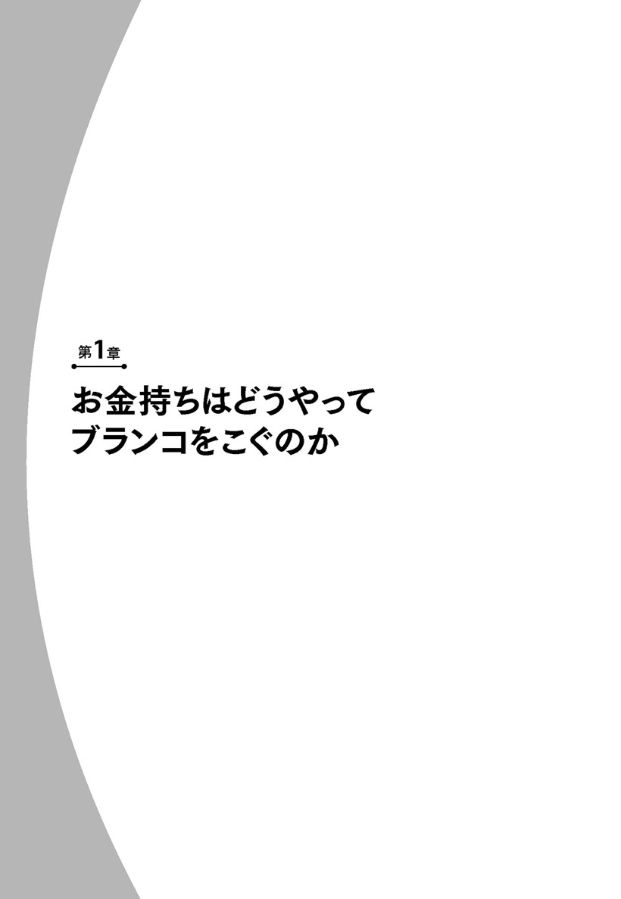
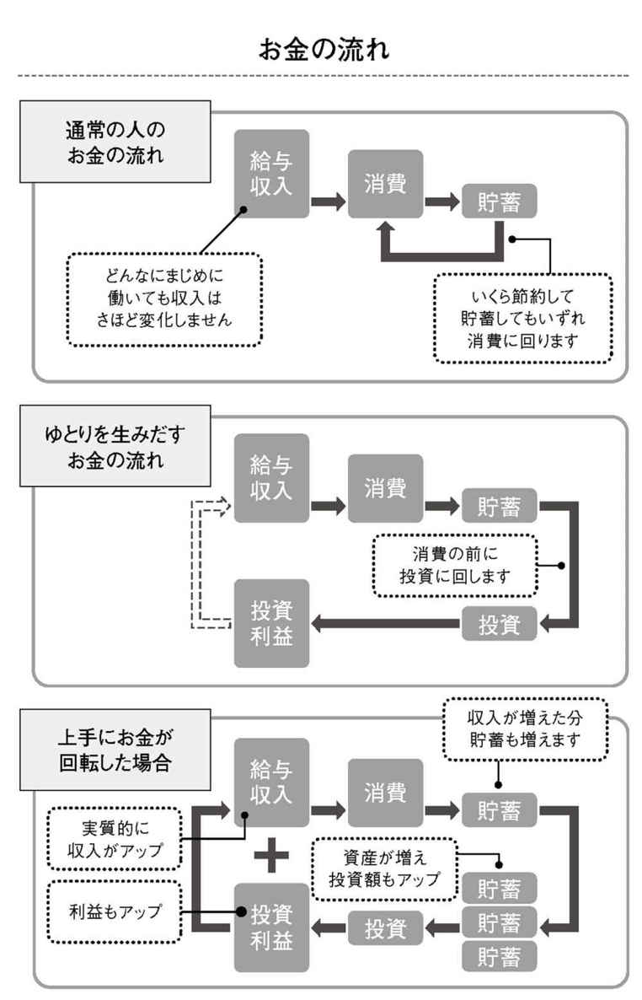
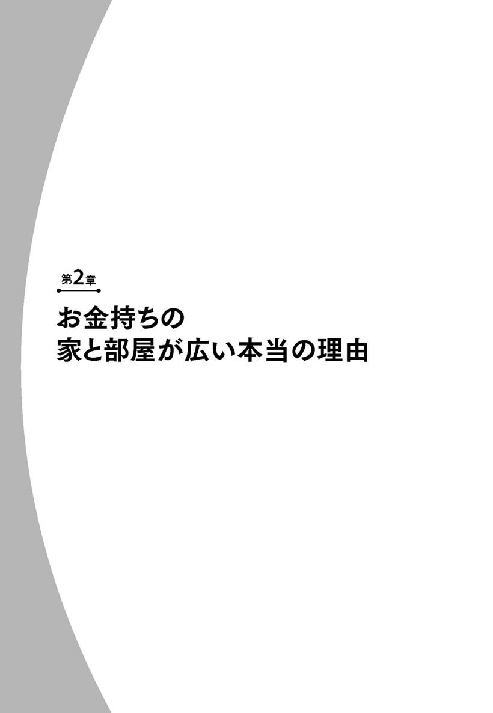
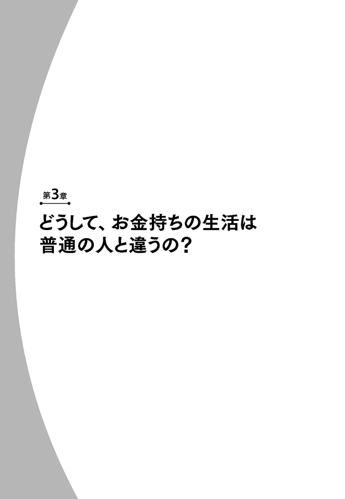
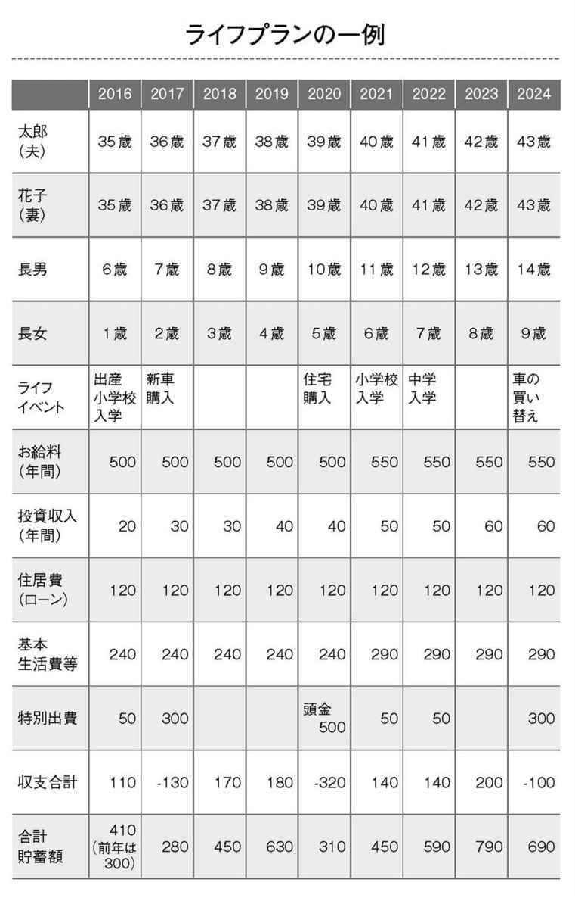
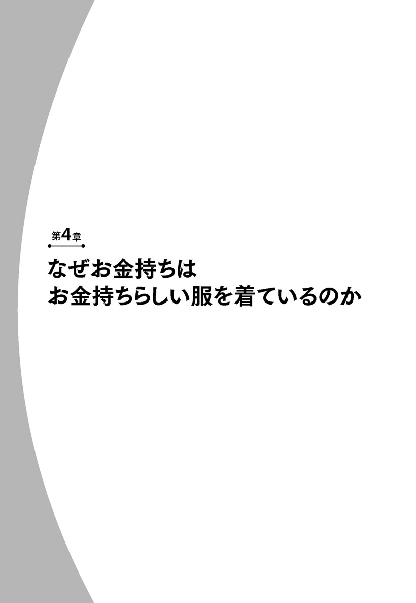
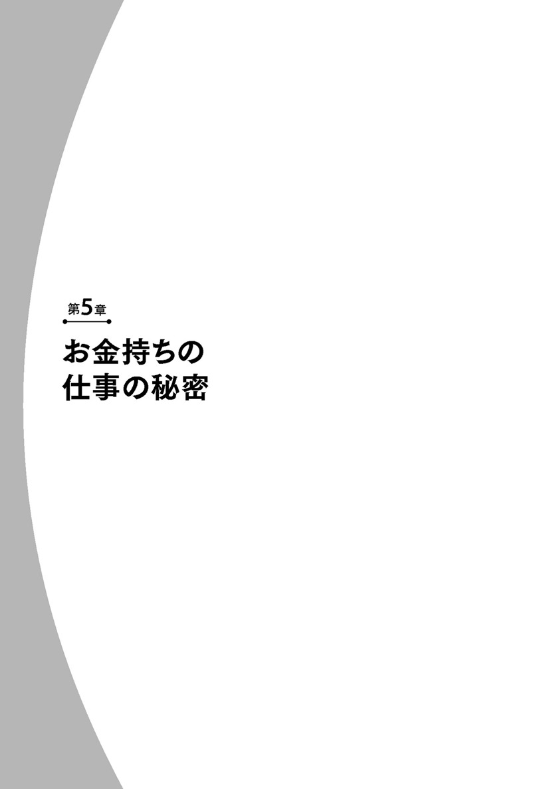
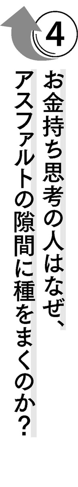
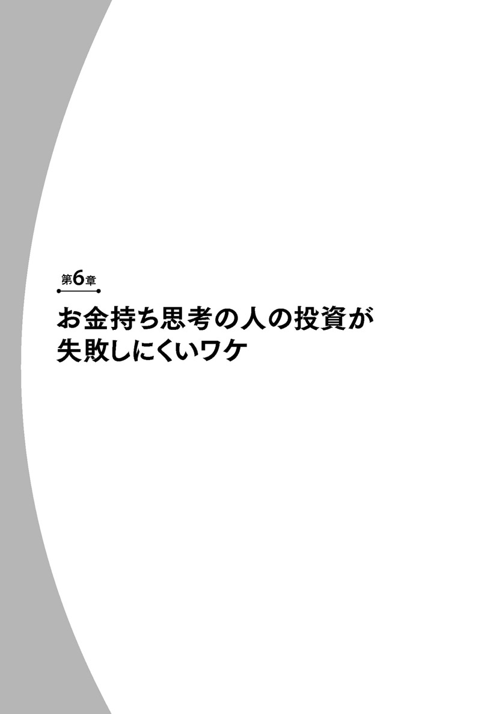
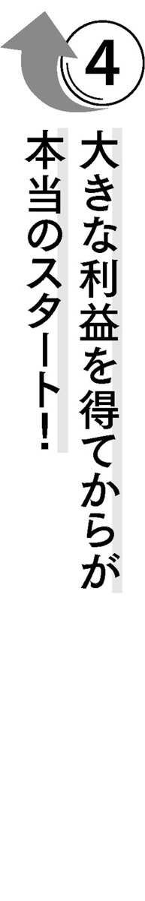

| 【入門】お金持ち生活のつくり方―――今すぐこの習慣と思考法を身につけよう！ | |
| 佐々木裕平 | |
| こう書房 (2016) | |
はじめに
お金持ちの家は広々としています。いいえ、より正確に言うならば、床の空いている面積比率が高いのです。
こう書きますと、まずこんなご意見が聞こえてきそうです。
「当たり前ではないか。大きな家を買うのだろうから、家が広いのだろう」
「家が大きいから、収納のスペースが多いのでしょう」
そうかもしれません...ですが、理由はそれだけでしょうか？
逆に、こんな仮説は成り立たないでしょうか？
家が広いからお金持ちなのではなく、空いている面積が広いからこそ、お金持ちなのではないでしょうか？
たとえば、おなじ広さの部屋に住んでいても、お金持ちの部屋は広々として開放感があるのではないでしょうか？
そうでない人の部屋は床に物があふれて、狭いのではないでしょうか？
「いやいや、お金持ちでない人の家は、家自体が狭いから、物であふれているのが普通だろう」
そうかもしれません。...でも、もう一歩踏み込んで考えてみてください。
将来、お金持ちになる人は、現在はワンルームマンションに住んでいても、その部屋は広々としているのではないでしょうか...？
もしそうだとするなら、広々としていることで何か具体的なメリットがあるはずです。それも、広々として気持ちがいいとかの気分的な問題ではなく、現実的にお金を発生させる『何か』が...。
私は子供のころから、何となくこんなことを思っていました。
小学生の時からお金に興味がありました。ある時、図工の時間に創作絵本を作る機会がありました。私が作成したのは、お金持ちのおじいさんとそうではないおじいさんが主人公の物語の絵本でした。
変な子供でした。
また、お金持ちそうな友だちの家に遊びに行くと、家と部屋が広いなあと思っていました。もちろん、子供ですからその友だちの親の収入なんて知りはしません。でも、なんとなく肌でそう感じていました。
そして、子供ごころにも、将来は私もお金持ちになりたいな...と考えていました。
月日がたち、私は社会に出て、普通の会社員になりました。新社会人のころは真面目にコツコツと働き、お給料をもらい、無駄づかいをしなければ、ある程度のお金持ちになれるだろう...と楽観的に考えていました。
ですが、数年すると『なんだかおかしいな？』と違和感を覚えます。
私は特に贅沢な生活をしているわけでもないのに、お金が貯まっていかないのです。生活もそれほど豊かになったわけでもありません...。
「普通に働いているだけではお金持ちになれないのでは？ このままではいけないのでは？」
そんなふうに考え、しだいに人生に閉塞感を感じるようになりました。あなたも同じようなことを感じたことがありませんか？
そこで私は人生の舵を大きく切り、本格的にお金の勉強を始めました。今ではファイナンシャルプランナーとして、資産運用の解説本を出すようにもなりました。
すると、子供の時の『何となく』は徐々に『仮説』に変わっていきます。
そして、ある時、意外な形で『確信』に変わったのです。お金持ちの家が広く感じるのには、きちんと理論的な理由があったのです。そして、普通の会社員がお金持ちになるには、（面積的な意味ではなくて）家の室内が広々としていることが必須条件なのです。
そうすることで現実的にお金を発生させる『何か』は理論的に動きだし、お金を稼ぎだすのです。
そして、その理由を順序立てて理解することこそが、普通の会社員がお金持ちになるための方法だったのです。
お金持ちになる才能──お金の偏差値──がハイレベルな人は、年は若くても自然とその行動がとれます。正確な用語や理論は知らなくても、本能的に正解を選択します。まるで一流のスポーツ選手の子供時代のように、ずば抜けています。
これはずるいです...。
さらにずるいことに、その差はほんのわずかな知識の差でしかありません。
あなたは、その知識を知りたくはないでしょうか。
私はどうしてもそれを伝えたくて筆をとりました。普通の人なら気がつかない、お金持ち特有の考え方も余すことなく記しました。
この本を読み終わった時、あなたもずるい側の人間になっていることを願っています。
ファイナンシャルプランナー 佐々木 裕平
【入門】お金持ち生活のつくり方──もくじ
カバーデザイン──ナカミツデザイン
本文レイアウト──北路社

この世界のカラクリに気がついて！
最初に問題を出します。
『お金持ちはどうやってブランコをこぐでしょうか？』
ここにブランコがあります。公園や学校の校庭にある普通のブランコです。誰だって、子供の時に一度は乗ったことがあると思います。これに乗ってがんばってこいだら、気持ちのいい風とちょっといい景色が手に入るのはご存じのとおりです。
そこであなたには、もっとも簡単で、もっとも疲れず、もっとも長く楽しめる方法を考えてほしいのです。
実はその方法こそが、お金持ちがブランコに乗る時の方法そのものなのです。その考え方を知ることが、お金持ちになる最初の条件です。さあ、あなたならどうやってブランコをこぐでしょうか？
それでは一緒に考えていきましょう。
街を歩けば、さまざまな人がいます。裕福そうな人もいれば、そうではなさそうな人もいます。あなたは裕福そうな人を見た時、次のように思わないでしょうか。
「彼らはお給料が高い職業なのだろう。あるいは、先祖代々の大金持ちなのだろう。普通の会社員である私ではとてもかなわない」
そして、そうではなさそうな人を見ると、今度はこう思わないでしょうか？
「彼らは私よりもお給料が低いのだろう」
これらの考え方は、あながち間違いではないと思います。たしかにお給料の高低は、裕福さに直結するでしょう。ですが、その考え方だけにとらわれていてはいけません。なぜならば、もし、あなたのその仮説が本当に正しいのであれば、普通の会社員は一生まじめに働いてもお金持ちにはなれないと認めてしまうことになってしまいます。自らがそう信じ込んでしまってはいけないのではないでしょうか。
もう一度、街を歩いている人々をよく見てください。裕福そうな人は皆、ビジネスに成功した社長や自営業者などに偏っているでしょうか？ 収入の低そうな人たちのすべてが、あなたよりも低賃金の人々でしょうか？
そうではないはずです。
どちらの場合もほとんどが、あなたと同じ会社員ではないでしょうか。会社員であれば、ある程度年収は似てきます。違いはあれども、天と地ほど違うことは、まずありません。
今度は自分の会社内を見てください。あなたの会社の同期や同僚のなかに、こんな感じの人はいませんか？
同じ会社で働き、同じようなお給料をもらっているはずなのに、いつもちょっといいスーツを着て、健康状態も良さそうで、日常生活もなんだか楽しそう。なによりも、こっちが収入のわりに大変な仕事で疲れているのに、まるで仕事からストレスを感じていない様子です...。
まるで自分だけ特別なお給料をもらっているかのように、楽しそうに人生を送っている普通の会社員...そんな、一人だけ得していそうな人です。どこの会社にも一人や二人はいると思います。
ここで一つの疑問と仮説が生まれます。
疑問『なぜあの人は、同じ会社員なのにお金持ちなのだろう？』
仮説『給与所得の高低が必ずしも、貧富の差を招くのではないのでは...？』
言い換えれば、普通の会社員でもお金持ちになれたり、なれなかったりする何らかの仕組みがあるはず...ということです。
百万円、あなたならどう使う？
ちょっと想像してください...あなたは散歩中に偶然、百万円の入ったバッグを拾いました。目の前に交番があり、すぐに落とし物として届けました。半年後、落とし主が現われなかったのでその百万円はあなたのものになった...とします。
あなたはこの突然手に入れた百万円の使い道を、どう考えますか？
旅行に行く？ 欲しかった洋服を買う？ 親に恩返しをする？ 貯金をする？ ...使い道は人それぞれで夢が広がり、ワクワクしますね。でもあなたなりの使い道はちょっとわきに置いておいて、お金持ちになれない人はどうするかを考えてみましょう。
彼ら（お金持ちになれない人たち）は百万円分の買い物をします。
すぐに全額使うことはなくても、半年とか一年がたてば、何か物やサービスに費やしてしまいます。
つまり消費です。使ってしまえばそれっきりの使い方です。たいていの物やサービスの値段は売り手側が勝手につけたもので、人件費や相手の儲けが含まれています。つまり、せいぜいその３分の１くらいしか本質的な価値はないのです。
高級なブランドバッグを買ったとしても、買った瞬間に中古品になります。すぐに売却しても買い取り価格は数分の一になってしまうでしょう。
それでは、少し小金持ちの人、つまり普通の人はどうすると思いますか？
彼らは百万円のうち、いくらかを自分へのご褒美として使って、残りのお金を将来のために貯金します。
一見すると賢い行為のようです...けれども貯金したお金はいつか消費してしまいます。今使うか後で使うかの違いだけで、先ほどのお金持ちになれない人と根本では同じ行動をしているにすぎません。
では、お金持ち思考の人はどう考えるのでしょうか？
お金持ちになれる人は、消費と貯金以外の第三のお金の使い道を知っています。
お金持ち思考の人は百万円を手に入れたら、まずこう考えます。
「どの金融商品を買おうかな？ 百万円なら、年間いくらのリターンが期待できるだろうか...？ どうやって増やそうかな？ 増やしたお金で何を買おうかな？」
すなわち、投資に回すことを考えるのです。
普通の人には、投資なんて選択肢は思い浮かびません。なぜでしょうか？
それは今まで習ったことがないからです。知らなかったことを突然思いつくのは、一部の天才だけです。普通の人は自分で本を買って一から投資の勉強をしなければいけません。でも面倒だから普通は勉強なんてしません。
お金持ちになりたい人は、実は自分の将来に大きな不安を感じています。その一方で、人より楽な生活がしたいと思っています。もっともそれは普通の人もそう思っているかもしれません。ただ、その想いの強さがケタ違いのようです。
お金持ちになれる人は──本当に──心の底からお金持ちになりたいと願っています。するとどうするでしょうか。
そう、行動に移します。投資のことを調べて勉強を始めます。書店や図書館で本をあさり、貪欲にお金持ちになる知識を吸収します。まるで熱い恋をしているように、寝ても覚めても投資でお金を増やすことを考えます。
そして、けっこうな時間とお金をかけ、思考の果てにお金持ちになるための、ある仕組みにたどり着きます...。
お金持ちのブランコのこぎ方
その仕組みの途中までは普通の人と変わりません。働き、収入を得る、そして消費して残りは貯金する...ここまでは同じです。
説明しなくてもおわかりになると思いますが、この仕組みだけでは永遠にお金持ちには...なれません。
たとえ会社員がどんなに努力をしても、努力に正比例してお給料は増えてはくれません。それどころか一所懸命に長時間働けば働くほど、時間換算あたりのお給料は下がっていってしまいます。お給料が変わらないから当然です。
そうです。会社員のお給料はがんばったら必ず増えるというものではないのです。
そして、仮に会社員の年収の10倍の収入を得ているお金持ちがいたとしても、彼らの労働時間は会社員の10倍ではありません。同じかそれ以下です。不公平なのですね。
このように普通の仕組みだけでは、がんばって働いてもお給料は変わらない上に、収入の大半は消費で消えていってしまいます。そのため、いつまでたってもお金持ちにはなれません。がんばって貯金だけをしてもそうです。貯めたお金を後で消費するか、今使うかの違いしかありません。
でも、お金持ちになる仕組みは、貯金から先が違います。
こういうことです。
貯蓄の一部を投資に回してリターン（利益）を手に入れます。そのリターンは言い換えれば（お給料とは別の）収入です。給与所得と合わさると、実質的に総収入が増えることになります。
すると今までと同じ生活をしていても、貯金が貯まるスピードが速くなり貯蓄額も増えます。総収入が増えたのですから当然です。
するとどうでしょう。
さらに投資にお金が回せるようになります。正しく投資ができればさらにリターンが増え、また収入が増えます。
こうして、今までは稼いだ分だけ消費したり、貯めたりしていただけのお金が循環するようになればしめたものです。あとはこの仕組みを維持することで、しだいにお金持ちになり、生活は楽になっていく...というカラクリです。
つまり、これがお金持ちとそうでない人のお金の流れの違いなのです。最初の貯蓄を消費に回すか、投資に回すかの違いだけです。

さあ、ここまでくれば、冒頭の問題の答えが見えてきました。
思い出してください。『お金持ちはブランコをどうやってこぐでしょうか？』という問題でした。条件は、もっとも簡単で、もっとも疲れず、もっとも長く楽しめる方法です。
消費しかしない人のブランコのこぎ方はこうです。
毎回、力を入れてこぎ続けなければなりません。こぐのをやめると「あっ」という間に失速して止まってしまうからです。汗まみれになっても、いつもと違う景色は一瞬しか望めません。
たくさん貯金する人のブランコのこぎ方はこうです。
ブランコの振れ幅が大きくなるまで一所懸命にこぎます。するとしばらくは、こがなくてもよくなります。がんばった分だけ、いつもと違う景色と涼しい風を楽しめます。ところが、しだいに勢いは衰え、やはり再び一所懸命にこがなくてはならなくなってしまいます。
それではお金持ちのブランコのこぎ方はどうでしょうか？
答えは『自分でこがない』です。
誰かに背中を押してもらえば問題は解決します。そうすれば、もっとも簡単で疲れず、いつもと違う景色と涼しい風をいつまでも楽しむことができます。
えっ？ 自分でブランコをこいでいないからずるい、ですって？ お待ちください、これがずるいと思うのはおかしな考え方です。本当にずるいというのは、人をだましたり、苦しめたりして自分だけが楽なことをするのがずるいということです。
よく見てください。ブランコに乗ったお金持ちの背中を押し続けているのは、誰でしょうか？
お金持ちにだまされたかわいそうな人でしょうか？
そうではありませんね。押しているのは...そう、ブランコに乗っている人が一所懸命に働いて稼いだ自分のお金です。
つまり投資をするということは、あなたのお金があなたの代わりに働いている、ということなのです。そうすれば、あなたは普通の仕事をしているだけなのに、お金が勝手に働いてくれて簡単により多くの収入を得ることだって夢ではありません。
お金持ち思考の人は、こう考えています。
「どうしたらもっとも楽にお金が手に入るだろうか...」
一見すると、ひどく不真面目で、成り立ちにくい考え方にも思えます。ですが彼らは真剣です。
まじめにそのことを考え、投資のセミナーに行ったり、書店で投資の本を買ったりしては勉強しています。その試行錯誤の果ての凝縮した答えが、今ご紹介した仕組みです。
お金持ち思考の人は、たとえ普通の会社員であってもこの仕組みを上手に使ってお金持ちになっていきます。
金額ではどのくらいでしょうか。
一般的な会社員の生涯給与収入がおよそ２億円として計算してみましょう。これは年収換算では平均５００万円、月収換算ではおよそ42万円の現実的な数字です。
先ほどの仕組みを実行に移さなければ、いくら真面目に働いても普通の会社員であれば収入額はそんなに変わりません。どんなに消費と貯蓄をしても２億円という限度額は超えられません。２億円の中で一生をやりくりするわけです。
ところが、先ほどの仕組みを実行に移した場合、普通の会社員でも２億円を上回る『可能性』が出てきます。もちろん、投資に失敗すれば２億円を下回る『可能性』もあります。（失敗しにくい投資については第６章で紹介します。）
あなたと同じ会社員で、お給料もそんなに変わらないのに、ゆとりある生活をしている人は、この仕組みを活用している可能性があるのです。
カギがなければお金持ちになる仕組みは循環しない
いかがでしたか？
なぜ同じ会社員でも貧富の差が生じるか、その仕組みがご理解いただけたでしょうか。
本気でお金持ちになりたい人々は、一所懸命に自分で勉強して、先ほどの仕組みにたどり着き、そしてこう思います。
「やった！ これで私もお金持ちになれるぞ！」
しかし、そうは問屋が卸しません。
すぐに気がつくことですが、仕組みの最初のステップである貯金が貯まらないのです。つい無駄づかいをして、毎月の収支がトントンになってしまいます。また、出世してお給料が増えても、やはりどういうわけか出費がその分増えて、お金は貯まりません...。
「実に不思議だ...特に贅沢をしているわけでもないし、何より真面目に仕事に精を出している...どうしてお金が貯まらないのだろう...うーん。お金があれば投資を始めてお金持ちになれるはずなのに！」
とは思うものの、現実にお金が貯まらないのですから、どうしようもありません。そのうちにお金持ちになることをあきらめてしまい、普通の生活に戻ってしまいます。
あるいは、がんばって節約し、貯金をたくさんして投資に回し、上手にリターンが増えても、次の循環が始まらないのです。
どういうわけか、やはり次の投資資金のための貯金が貯まりません。お金の流れが再び止まってしまうのです。
そんな時はこう思ってお金持ちになるのをあきらめてしまいます。
「おかしいなあ、お金持ちになる仕組みはこれでいいはずなのだが...投資も勉強したのに...やっぱり給与所得が高くないからお金持ちになれないのに違いない！」
私は、その考え方は間違っていると思います。
仕組みはそれであっています。
ただ、大切なカギを知らないだけなのです。そのカギの存在を知って、管理しなくては、お金持ちになる仕組みは永遠に循環しないようにできているのです。カギがなければ、いくら給与所得が増えても、お金が貯まりません。カギがなければ、いくら投資からのリターンが増えても、お金が回りません。
そのカギとは何でしょうか？
そのカギとは『参照点』に他なりません。
参照点とはリファレンスポイントとも呼ばれ、絶対的な基準点ではなく、移動する基準点ということですが...、この説明だけではなんだかよくわかりませんね。
キーワードなので、もう少しかみくだいてみます。
たとえば、『目線の高さ』と言い換えることができるでしょう。ここに高さ１メートルのブロック塀があるとします。あなたにとって、この塀は高いと感じるでしょうか？ おそらく大人のあなたからすると、そんなに高いとは感じない高さでしょう。
ところが、タイムマシンで赤ちゃんのあなたを連れてきたとします。赤ちゃんのあなたがこのブロック塀を見れば、たかが１メートルの塀も乗り越えることのできない巨大な壁に見えるのではないでしょうか。
この壁は、絶対的な基準では高さ１メートルです。高くも低くもなく、ただの１メートルです。そこに人の主観が入るだけで、低さ・高さを感じるわけです。
つまり、この場合は成長による身長増加によって、目線の高さは変化したわけです。これが移動する基準点、参照点というわけです。
そして、たとえ同じ人間であっても、その時々で参照点は動きます...変わってしまうのです。
もう一つ別の例を挙げましょう。参照点は感覚にも影響します。
ここに室温20℃の部屋がある、とします。あなたがこの部屋に入った時、暑いと感じるでしょうか？ それとも寒いと感じるでしょうか？
答えは、その時々で変わるはずです。
たとえば今が真夏で、外が35℃を超える猛暑だとします。あなたは炎天下に直射日光を浴びて汗だくになり、この部屋（20℃）にたどり着きました。気温差はマイナス15℃です、誰だって涼しいと思うことでしょう。
ところが今が真冬で、外気温が０℃ならどうでしょう。雪がちらつくなか、凍えそうになりながらあなたはこの部屋に入ります。外気との気温差はなんとプラス20℃です。今度は誰だって暖かいと思うはずです。
このように、あなたの感覚の基準さえ、簡単に移動してしまいます。これが移動する基準点＝参照点なのです。
自分では『これが基準で、当たり前だ！ １００％自分の意志でそう考えている！ 私のものごとに関する基準点は動かない！ 私の感覚は絶対だ！』と思っていることでも、実はそれは外的要因や自分の成長具合、周囲の環境によって『そう思わされているだけ』のことというのは、けっこう普通にあるものです。
それが参照点で、お金持ちになるため仕組みを循環させるための大切なカギなのです。
お金の参照点は移動してしまう
話を元に戻しましょう。収入と消費（＝支出）に関しても参照点があるのです。そしてそれが移動してしまうがゆえに、人は貯金もできないし、お金持ちになる仕組みも循環させることができないのです。一体、どういうことなのでしょうか。
わかりやすくするために、あなたにとってのお金の参照点の変化を見てみましょう。ここでは20万円という金額で見てみましょう。
子供の時のあなたにとって、20万円ともなると驚くべき大金だったはずです。もちろん子供にそんな大金を手に入れる方法は、普通はありません。それくらい途方もない大金に思える金額です。
子供にとっては１万円でも高額です。お財布に初めて１万円札を入れた時など、そわそわしてしまった経験がある人もいるのではないでしょうか。
なにしろ１万円もあれば、お菓子もおもちゃも何でも買えます。まるで王様になったような気分です。ちなみに私は、生まれて初めて５００円玉をもらってポケットに入れた時には、まるで宝石をもらったような気分でした。
月日が流れ、新社会人になった時はどうでしたか？
20万円は初任給とほぼ同額だと思います。一か月間も先輩社員に文句を言われながらも必死になって働いて手に入れたお金です。
毎晩遅くまで働いて、休日は家で眠るだけしかできないほど疲れ果てたこともあったかもしれません。そんな苦労をして手に入れた、とても貴重な20万円です。なんだか誇らしげな気分で、初任給を大事に使おうと思ったのではないでしょうか。
なかには、両親に今までの感謝の気持ちを込めて、記念品を贈った人もいるのではないでしょうか。
もちろん記念品と言っても、予算は１万円程度しか出せなかったでしょう。でもその金額は、その時点での全資産の数分の１から数十分の１ほどの価値が相対的にあったのではないでしょうか。
何年かたち仕事にも慣れると、役職も付きはじめ、部下を持ち、年収が５００万円を超えるようになるかもしれません。そうなると社会保険料と税金だけでも年間１００万円近くを国に納めるようになります。
すると、今度はどう思うでしょうか。
子供のころには途方もない大金と思っていた20万円にはそれほどの価値を感じなくなってしまいます。１万円札をお財布に何枚入れても、特に何も感じません。ちょっとお高いお店に飲みに行けば、１万円なんて吹き飛んでしまいますし、バッグやスーツなどの高級ブランド物は１万円では手も足も出ません。
１万円の価値は変わっていないのに、まるで価値が下がったような印象です。
このようにお金の参照点は収入が増えるにつれて、どんどん上昇してしまうのです。
これが『人をお金持ちにさせなくしてしまう最大の要因』なのです。
つまり、せっかく前述のお金持ちになる仕組みを勉強して、作ったとしても、参照点を知らなければ、お給料が上がってもその分、無自覚のうちに参照点が上がってしまうことになります。その結果、お金を多く使ってしまい、貯金が貯まりません。そのため余裕資金がいつまでたっても生まれずに投資ができないのです。
あるいは、苦しい思いをして何とか節約をし、貯金して投資に回し、ポンと高額の利益が入ったとしても
「儲かったから、何かご褒美を自分にあげよう。あれが欲しい、これも欲しい、このくらい買ってもいいでしょう」
と考えて使ってしまいます。この場合は、利益が突然手に入ったことにより、一気に参照点が上がってしまうのです。
しかも『上がった参照点は下がりにくい』という嫌なおまけまでついてきます。
ですから、その状態でまた節約をしようものなら大変です。
たとえば中堅の会社員になってから、学生時代なら何とも思わなかったような節約生活をすると、どうなるでしょう。ストレスは一気にたまり、反動で高額商品の衝動買いをしたくなることもあるでしょう。
その衝動買いの気持ちを必死に抑え込もうとすると...今度はみじめな気持ちになってきます。こうなると節約そのものが非常につらくて悲しい行動のように感じてしまいます。ですが、この思考と感情は非常に不思議です。
なぜなら、本人がいくらみじめに感じても、現実として学生時代よりも収入は増えているからです。当然、生活は以前より豊かになっています。それにもかかわらず、みじめに感じてしまうのです。
思い出してみてください。初任給の20万円をもらった時、みじめな気持ちになったでしょうか？ なりませんでしたね。むしろ誇らしかったはずです。参照点が移動すれば、気持ちまで変化してしまうのです。
別の言い方をすると、収入が増えると、財布のひもを締める握力が弱まってしまうのです。これではいつまでたっても、お金持ちになる仕組みが循環しません。
参照点を固定すれば仕組みは動く！
それでは、どうしたらこの問題を解決できるのでしょうか？
答えは非常にシンプルです。意識的に参照点を固定してしまえばいいだけです。
詳しくは、次章以降で解説しますが、たとえば、『20代前半・一人暮らし』であれば毎月の出費を初任給の20万円以内に抑えるようにします。すなわち年間の支出額を２４０万円に固定してしまうのです。
こうすることで、手取りの年収が４００万円なら毎年１６０万円が貯蓄できることになります。一時的な出費用に銀行に１００万円ほど残しておいて、残りを投資に回せばいいのです。１００万円は最初の年だけ残しておけばいいのですから、翌年からは安定して１６０万円を投資に回せます。数年もすれば数百万円の金融商品が保有できます。そして正しく、堅実に運用して年平均数％のリターンを得ることができたなら、年間数十万円の利益が望めます。
その利益は自由に使っても『仕組み』には影響がありません。海外旅行に行ってもいいですし、両親に恩返しをしてもいいです。もちろん、服やバッグを買っても大丈夫です。ただし、利益の範囲内だけにすることが重要です。そうすれば『仕組み』を維持するだけで毎年１６０万円は、勝手に投資に回せるお金が増えつつ、同時に総収入（＝給与＋投資のリターン）も増加していきます。
投資からの利益を貯金するのもよいです。
あるいは、利益を元手に20代で月数万円の掛け金の個人年金（民間保険会社）に加入すれば、60歳から向こう10年間──あるいは終身──毎年数百万円以上の個人年金を受け取れるようすることもできます。これも立派な資産運用です。なおかつ単純な貯金よりも有利になる可能性があります。
老後のお金と言えば公的年金もありますが、なにしろ公的年金は現在基本的に65歳からしか受け取れません（60歳からも受け取れますが、減額された年金額になってしまい、しかも一生涯減額されます）。おまけに超高齢化社会の到来により、今後は70歳以降からの受け取りに移行していくかもしれません。一足早くリタイヤして残りの人生を楽しみたいなら、60歳から受け取れるように設定する個人年金は非常に有効だと思われます。
もっともそのころには、投資からのリターンは年間数百万円を超え、使い切れないかもしれませんが...。
断わっておきますが、年をとって働くことがいけないと言っているわけでは決してありません。人生には何が起こるかわかりません、病気・ケガ、家族の介護など、年をとっても健康で元気に働けるかどうかは未知数です。そのための対策としてもこの方法は有効だという話です。
あるいは投資からのリターンを再投資するのもよいでしょう。これがもっとも短い期間でゆとりを手に入れる方法だと思います。早い人では40歳代で会社を退職してもいいくらいのゆとりが確保できるかもしれません。あるいは自分でビジネスを立ち上げる人もいるかもしれません。
ですが、『お金持ち思考の会社員』の多くはそんなことをせずに、昼は普通の会社員として働き続けるのではないかと思います。
なぜなら、お金持ち思考の会社員にとっては新ビジネス設立のために安定した職を辞した上に、大金を投じるという巨大なリスクは魅力的には見えないと思うからです。
彼らは無理にリスクを背負わなくても、会社員と個人投資家という二足のワラジを履くことで、安定して高い総収入を確保し続けられます。『普通に働いているだけでお金持ち』という夢のような好条件をむざむざ手放す人はなかなかいないのではないでしょうか。
また、お金のために働かなくてもよい時こそが、真に自由で楽しい仕事ができるから辞める気にすらならないかもしれません。なにより資産がドンドン増えるのが楽しいことでしょう。
お金持ちになる仕組みと、キーワードである参照点がご理解いただけたでしょうか。
第２章以降では、その仕組みをさらに円滑・確実にするための知識・習慣・考え方、そしてすぐにできる実行策を紹介していきます。

室内の広さと総収入の不思議な関係
あなたは、いわゆる『お金持ちの家』に行ったことがあるでしょうか。
もちろん、実際に行ったことがなくても、テレビの有名人の豪邸を拝見する番組でもかまいません。いえ、むしろテレビが取材するくらいの典型的なお金持ちの家のほうが、共通認識を得やすくてよいと思います。
そんなお金持ちの家を何件か見ると、ある共通点に気がつきます。なんでしょうか？
それは、『はじめに』でも触れましたが、室内が広い...ということです。では、どうして広いのでしょうか？
「お金持ちだから家が大きい。だから室内が広い」
これも本書の『はじめに』で少しふれましたが、普通の人はここで考えが終わります。ですが、ここにこそ普通の人がお金持ちになれるかどうかのポイントの一つがあるのです。
もう少しだけ深く考えてみましょう。
たとえば都心の億ション（＝販売価格が億単位のマンション）を思い浮かべてください。値段も高いですが、その分たしかに室内面積が広いです。室内は物であふれていることはなく、きれいに片付いています。広々としてすがすがしい印象を受けます。
一方、地方の一軒家はどうでしょう？ 地方に行けば行くほど、地価が下がるので家の面積は広くしやすくなります。現実にも、都心の億ションであっても、地方の一軒家の床面積と敷地面積にはかなわないことが多いのです。
さらに、田舎の大きな家ともなると玄関の面積だけでも、都心のワンルームマンションより広いこともざらです。では、その地方のすべての家の室内は広く感じるでしょうか？ 答えはノーです。
たとえ地方で比較的広い床面積の家でも、ゆとりのある人の住んでいる家の室内は広く感じ、そうでない家は広く感じないことが多いのです。
面白いですね。さあ、どうしてでしょう。
答えは明確です。物理的な問題です。それは家具や小物などの物が多いか少ないかの違いでしかありません。物のサイズの大小や価格はさほど関係ありません。
意外なことにお金持ちのほうが物は少なく、普通の人のほうが多いのです。そのため、同じ床面積でもお金持ちの家のほうがスッキリとして広く感じることが多いのです。
普通の人は『お金がない、家が狭くて収入スペースが少ない』と言いながらも、室内にあふれんばかりに物がそろっています。安いものから高いものまであります。服もクローゼットからはみ出すほどたくさんあります。押し入れも、いつ使うのかわからない物でいっぱいです。それどころか、物は部屋の中だけに納まりません。廊下はもちろん、階段・玄関やベランダ、果ては車のダッシュボードの上やリアガラスの周りまで、物であふれているケースもあります。
テレビで見たようなお金持ちの家を、もう一度思い出してください。億ションのベランダや玄関・階段・廊下周りに物が散乱していたでしょうか？ 高級車の車内に物があふれていたでしょうか？ そうではなかったはずです。
核心にせまりましょう。なぜお金持ちの部屋がスッキリしているのでしょうか？ 理由は大きく二つあります。第一の理由は、買い物における出費の参照点が低い、あるいは参照点の管理がうまいからです。
たとえば、デパートを歩いていて、何か欲しいものがあったとします。お財布にはお金があります。あなたならどうしますか？
普通の人なら欲しいから買うでしょう。ところがお金持ち思考の人は参照点を低く管理しているから、買いません。彼らはセーブしたお金で何を買っているのでしょうか？
これが第二の理由の答えになるのです。
お金持ちの家にあふれているのは...見えない○○！
先ほどの説明と矛盾しているように聞こえるかもしれませんが、実はお金持ちの家には『あるモノ』があふれています。
結論を先に言いましょう。それは金融商品です。
不必要な家具や小物などを買わない代わりに、株式や投資信託などの金融商品があふれているのです。もっとも現在では株券などの紙の有価証券は一般的には存在しません。すべてペーパーレス化（＝電子化）されており、現実には見ることもさわることもできません。もっともパソコンなどの画面上で、文字や数字としては確認できますが...。
ですから、お金持ちの家はいつもスッキリ、広々としているのです。
もちろん、単純に有価証券を無駄買いしているのではありません。最初に消費や貯蓄に回すお金を投資に回すことによって、そのお金は利益を生み、より大きな総収入として返ってくるのです。その結果としてますます生活にゆとりが増えていきます。
部屋の広さと総収入には意外な関連性があったのです。そして一生で得られる給与所得の総額にさほど差がない普通の会社員ほど、この傾向は顕著に表われます。
仮に、あなたが同僚のワンルームマンションに遊びに行ったとします。その人の室内が異常にスッキリとしていたら、その人は投資をしている可能性が高いです。しかも投資家としてかなりハイレベルかもしれません。その理由は、室内がスッキリしているその分、見えない金融商品が家の中にあふれている可能性があるからです。
物がないと言っても、単純に貧しい生活とは限りません。ひょっとしたらその人は、あなたと同じお仕事内容・同じお給料にもかかわらず、いい服を着て、高い車に乗り、おいしい食事を食べて、老後の心配がいらないように密かに高い個人年金も組んでいる可能性があります。おまけに自由に使える貯金だってたっぷりとある...かもしれません。
反対に、もしもあなたの部屋が、物であふれかえっていたらこっちは黄色信号です。
何しろお給料は変わりませんから、生活にゆとりが出るかどうかは『ここ』にかかっています。『ここ』とは、すなわち、先にお給料を使うか、貯めてから使うか、あるいは貯めて増やして使うか...どれにするか？ だけです。
繰り返しますが、あふれている物の値段はさほど関係ありません。安い高いに関係なく、物が多くなるほどゆとりが生まれにくくなります。なにしろ一度お金を出して買ったものは、基本的に値段が急激に下がり続けます。つまり価値が減っていくのです。
価値が減っていくものを次々と買っていけばお金が減っていきます。これを続けていればいつもお金に困るのは当然の結果ではないでしょうか。
家の中に物があふれているということは、実はうれしいことでもなんでもないのです。とてもひどい言い方をすれば、ゴミがあふれているのと同じこと...と言えるでしょう。
お金持ち思考の人は、理論はわからなくても本能的にそれを察知しています。そのため室内を常に片付け、余計なものを買ったり置いたりしないようにしています。だからお金持ちの家はいつも広々と感じるのです。
見える物でなく、見えない金融商品で部屋をいっぱいにしよう！
神頼みが目的...ではありません
あなたは今年、お正月に初もうでに出かけましたか？
なぜこんな質問をしたかと言いますと...別に宗教の話がしたいわけではありません。あなたがどんな宗教でもかまいません。この節では、昔ながらの日本の家について考えてみようと思ったからです。
昔の日本では、どこの家庭にも必ず神様や仏様のための設備がありました。台所では火の神様をまつり、井戸では井戸や水の神様、神棚では家の神様と氏神様をまつり、お正月には年神様をお迎えします。そしてご先祖様の供養のためにお仏壇がありました。今でもお正月の鏡餅や門松、お盆などにその名残がありますね。
そして現代...あなたの家にお仏壇はあるでしょうか？ 本家や実家にはあるかもしれませんね。では神棚はありますか？ お稲荷様の社はあるでしょうか？
現代の住宅事情も相まって、ない家のほうが多いのではないでしょうか。
ですが、お金持ちの家にはわりと普通にあります。これからお金持ちを目指す人の家にもあるでしょう。特に自営業でお店や事業所を経営している人の家にはたいていあります。先進的な大企業の社屋の屋上にも、どこかの神社から分社してもらったお社やお稲荷様の社があります。なぜでしょうか？
さらに突っ込みます。自営業者や経営者の家には多いですが、反対に、会社にやとわれている身である会社員の家には少ない傾向にあります。なぜだと思いますか？
神様に頼めばすべてがうまくいくワケではないことは、現代人ならすぐにわかりますね。あくまでも夢を叶えるのは自分自身です。それでは一体、神棚などにどんな効果があるのでしょうか？
実はこれらの理由こそが大変重要なのです。
案ずるよりも産むがやすし（もちろん出産はちっともたやすくない行為なのですが）...という言葉もあるので、試しに神棚を買ってきて家の中に設置してみてください。
──（諸説ありますが...）ちなみに神棚は小さな神社のようなものです。仏教で言うなら、お寺の本堂・本尊に対しての家の仏壇みたいな存在かもしれません。もっと身近な存在の、銀行に例えるなら、本店窓口に対してのコンビニのＡＴＭのようなものです。神棚が家の中にあるということは、毎日、初もうで気分が味わえるということでもあり、ちょっとお得な気分かもしれません。──
「神棚なんて大げさだなあ。値段も高いでしょう。それに、そんなに信心もないよ」
そんなことはありません。ホームセンターに行けば千円程度から売っています。地域によっては、神棚は毎年交換する物なので、安いものでかまわないと思います。お水や塩を入れるセットも千円も出せばそろいます。最近ではインターネットのサイトでも買えます。榊（サカキ）と呼ばれる葉っぱも、数百円でどこの花屋さんでも売っています。むしろ売ってない花屋さんを見つけるほうが大変なのでは...と思います。
信心があるかないかは私にはわかりませんが、お正月に初もうでに行ったことがある人なら十分だと思いますが、いかがでしょうか。
つまり、神棚は昔も今も、とても身近な存在なのです。気軽に挑戦してみてください。
なにしろ日本人は世界でもまれなほど宗教に寛容です。
たいていの日本人は、我が子の安産祈願を神社とお寺の両方にお願いします。生まれた後はお寺の墓前やお仏壇に報告しますね。少し大きくなれば神社にお宮参りに行き、夏にはお墓参りへ、十二月にはクリスマスだって普通に参加して楽しみます。そして数日後には神社やお寺に初もうでに行きます。成長すれば教会形式の結婚式を挙げ、亡くなったらお寺でお葬式を...とても寛容だと思います...。
お金持ちの日常の風景
さて、神棚を買ってきて設置したら、毎朝、サカキのお水を交換します。お水は多すぎると茎や枝が水に浸りすぎて傷みやすくなります。ちょっと少ないかな？ と思うくらいがよいようです。そしてその時に、あなたはついでにお参りをしている自分に気がつくはずです。時間にして、数秒から１分もかからないくらいでしょう。
実は、これこそが現代のお金持ちの隠された日常です。
もちろん彼ら全員が、必ずしも厳格な信仰心を持っているわけではありません。神頼みがすべてを決める、と思っているわけでもありません。気軽にお正月に初もうでに行くくらいの気分です。ただお参りの副産物として、夢を叶えやすくする（＝お金持ちになりやすい）能力を得ているだけです。詳しく見てみましょう。
実は、お参りはもちろん、スポーツやビジネスでも目標や夢を叶えやすくするには共通のテクニックがあります。
それは『いかに具体的に夢や目標を述べられるかどうか』です。
たとえば漠然と『お金持ちになれますように...』とお参りをします。
最初はぼんやりと思うだけで、自分でも一体どうしたいのかよくわかりません。何週間か続けていると、『どうやって？』と自分で思うようになります。そのうちに『ああやって、こうやって...そのためにはあれが重要だ...うーん...』だんだん具体策や数字を自分で考えるようになります。
すると『よし！ 今日はこうしよう。うまくいきますように！』とお参りのたびに具体策が出てくるようになります。こうなると毎朝のお参りはお願いから『目標のために今日はこうしよう、うまくいきますように』という具体的な宣言になっていくのです。
『叶える』という漢字をよく見てみましょう。口と十からできています。正式な漢字の由来は残念ながら知りませんが、自分の夢や目標のために、何度も目標を口にすることは夢を叶えやすくする...というニュアンスからこの漢字はできているのではないかな...と考えてしまいます。
お金持ちはこの一連の思考を毎日毎日、それこそ何十年も繰り返しています。
先ほど『お金持ちの隠された日常』と書きましたが、彼らにしたら別に隠してもいません。むしろ世間の人も同じようにやっているだろう、と思っているかもしれません。
結果として漠然とした夢は細分化された具体策と行動になり、現実になりやすくなります。そして、自分の力で夢を叶えたにもかかわらず（神様がいるかどうか私にはわかりませんが）神様に感謝することになります。
だからお金持ちの家には神棚やそれに類するものがあるのです。
ビジネスでもそうですが、目標を達成するためには、具体的な実行策ほど有効なものはありません。
企業で例えれば、毎日早朝に会議室で会社の重鎮たちが集い、意思決定会議をしているようなものです。効果は必ず出ます。もしもウソだと思ったら試してみてください。一年も続ければ、目標と行動が明確になり、成果も出てきます。
「だけど我が家は神道ではないのだけれど...」
もちろんですとも、あなたの信じている宗教の神様や仏様に応じて変化させたらよいと思います。
大事なのはお金持ちの習慣を、あなたにうまく応用することではないでしょうか。
夢や目標の作戦を具体的にイメージして、宣言しよう！
就寝時、机の上には何も置かない
提案ですが、早速お金持ち思考の人のマネをしてみてはいかがでしょうか。
これから述べるポイントを、あなたの日々の生活に取り入れてみるのです。そうすると余計なものが徐々に部屋から減っていき、部屋は広々とする上に、お金も貯まります。その上で正しい投資をすれば、しだいに見えない金融商品であふれていくでしょう。お金持ちになるためのファーストステップというワケです。
まず、自宅の机の上を見てください。
食事を食べるテーブル、パソコンをするための机など、すべてです。おそらく何らかの物が机の上には載っているはずです。昼間はそれでもかまいません。ですが寝る時には何もないようにしなければなりません。ペン一本も出ていてはいけないのです。
最初はとまどうと思います。
何しろ自分ではベストの配置だと思っているからです。必要なものはなんでも手を伸ばせば届きますし、場合によっては一日中席を立たなくても困らないくらいです。それくらいとても快適です。
でも、それでは普通の人のままです。
変わりたいなら、お金持ちのマネをするのが手っ取り早いのです。思い出してください。お金持ちの家は手を伸ばせば、何でも手に入るくらいゴチャゴチャしてはいませんでした。スッキリしているのです。
片付け始めは無理矢理でもいいです。それこそ机の上の物を引き出しなどに突っ込むだけでもいいです。こうすることで毎晩、机の上の棚卸ができます。
棚卸とは、一般的に店舗などの商品の在庫数（在庫の総額）などを確認することを指します。店舗では月に一度、半年に一度などのペースでそれをおこなうことが多いです。経営者は棚卸をすることで、余りすぎている在庫数を把握することができます。なぜそれをおこなうかというと、機会損失を最小限にするためです。
機会損失とは、たとえばこういうことです。
在庫が多すぎるということは、お金を余計に商品化していることになります。その状態は、お金が正しく働いていないことを意味します。現実には腐って売れなくなるリスクのない機器などの商品だとしても、他の売れる商品や設備にお金を回していたら、もっとお金を稼げたかもしれません。つまり儲ける機会を逸してしまっているわけです。これが機会損失です。
話をもどしまして、在庫が多いということは、現金をうまく活かせずに機会損失が生じていることに直結します。そんなことをしていては企業の経営がうまくいくはずがありません。だから企業は定期的に棚卸をするのです。
それでは早速、あなたにとっていちばん身近な机の上を棚卸してみてください。
大変だとは思いますが、毎晩机の上に物がない状況をとにかく１か月は維持してみましょう。なぜなら、その状況に慣れれば、片付けに関する参照点が確実に上がるからです。こうすればしめたものです。再び机の上に物があふれだすと嫌な気持ちになります。
「今にして思えば、よくあんなにゴチャゴチャした机で我慢していたな...」
と思うようになれば第一歩は成功です。
押し入れと本棚の空間を確保する
次は部屋の模様替えに挑戦してください。
これもとても簡単です。何もむつかしいことはありません。やり方は冷蔵庫やテレビなど、何年も動かしたことがない物を、まったく違うところに置くだけです。
大きな家電や家具を別のところに移動するにはどうすればいいでしょうか？ そう、新しく移動先のスペースを開けなければなりませんね。そのためには何かを整理しなければなりません。
最初の数か月は、月に１度くらいのペースで徐々に模様替えをすることをお勧めします。一度にすべてをおこなうと、体が非常に疲れてしまうからです。
では、いよいよ本丸へと攻め込みましょう！
模様替えを繰り返すと、だんだん部屋が広くなります。では、以前あった物はどこへ行ってしまったのでしょうか？
答えは引き出しや押し入れ・本棚、衣装ケースなどです。ここに逃げて隠れています。ここで手をゆるめてしまっては意味がありません。
押し入れの中にしまった物たちは、そのうち何気ない顔で再びあなたの部屋を占領し始めるでしょう。
あるいは衝動買いなどで新しいものを買っても同様です。押し入れがいっぱいですから、しまうことができず、机や床を占拠していきます。結果として、再び、そしてさらに、物だらけの部屋へと変化していきます。ダイエットでいうところのリバウンドです。こんなことを繰り返していては、やはりお金持ちにはなれません。
対策は簡単です。
押し入れ・本棚・衣装ケースを半分空っぽにするだけ、つまり物を捨てたり売却したりするだけでよいのです。
想像してください...押し入れはスカスカ、本棚も半分しか本がありません、衣装ケースもガラガラな状態...なんでも入れられます。もちろん寂しくなんかありません。やがてその空間は見えないお宝でいっぱいになるからです。
あなたは心を鬼にして処分するだけでよいのです。
この一連の行動は、過去の普通の自分との決別です。お金がお金を生みだす、ゆとりある生活への道の記念すべき第一歩として、過去のゴミを捨てるのです。
意外に思うかもしれませんが、それができるかできないかどうかが、あなたがお金持ちになれるか普通の人で終わるかの分岐点になることでしょう。
捨て上手は投資上手！ の意外な理由
「不要な物を捨てられるか、そうでないかがお金持ちへの分岐点ですって？ ハハハ、大げさだなあ」
と思うでしょうか？ ところがそうではありません...やはりこれにもれっきとした理由があるのです。
『シンクコスト』という言葉を聞いたことがありますか？
直訳すると沈んだ費用なのですが、これは『どのようにしても回収できない費用』を指します。
たとえ話ですが、大手電機企業がテレビ製造工場を国内に５００億円もの巨額を投じて建設した...としましょう。ところが、残念ながら21世紀では国内でテレビを作っていては生き残れませんでした...安い人件費で高性能の商品が作れる海外の工場で作ったほうが儲かる...ということが建設後に発覚した、とします。
さあ大変です！ この国内工場は毎日が赤字で、一日が経過するごとに数百万円の赤字を計上していきます。仮にあなたが社長なら、この工場をどうしますか？
もし社長が普通の人なら、５００億円もかかった工場がもったいないから壊せません。それに建設費よりも安く売却することもできません。
何よりも、工場を建設するのにゴーサインを出した自分のメンツが丸つぶれになってしまうのが怖くてたまりません。ダラダラと赤字を計上し続けて損失を拡大し、会社の経営が手遅れになる寸前で、ようやく売却するでしょう。
もう私の言いたいことがわかると思いますが、工場建設費用の５００億円はシンクコストなのです。今後どんなにがんばっても回収できない費用です。だから、工場をきれいさっぱり手放すのが正解です。
もし社長がお金持ち思考の持ち主なら、５００億円かかった工場を即刻、売却するか更地に戻します。そして他の成功の見込める分野へと再投資をします。この選択肢が最も損失が少ない行動です。
シンクコストの影響をもう一つ例を挙げるなら株式投資です。
自分の思い入れが強い株式ほど、値下がりしても売却できないものです。結果として損失を広げたり、売るに売れない安値で塩漬けにしてしまったりすることが多々あります。お金持ち思考の人はそんなことはしません。シンクコストはいつでもバッサリと切り捨てる選択をします。
話を戻して、あなたの状況にあてはめてみましょう。あなたにとっては、捨てるべき服や雑貨が５００億円の赤字生産工場であり、値下がりした株式であり、シンクコストの塊です。どうしたらいいでしょうか？ もう、おわかりですね。
ですから『不要なものを捨てられるか捨てられないかどうかがお金持ちへの分岐点』というワケなのです。
さあ、これで部屋の中はだいぶスッキリしてきました。スッキリすればするほど、見えない金融商品が入るスペースが生まれます。あとはこの状態を維持するだけです。
つまり、維持すること＝余計なものを買わずに見えないお宝を買うゆとりを生むこと...に直結するわけです。
維持しやすくするポイントはこまめに掃除をすることです。あなたの部屋にホコリをキャッチするハンディワイパーはありますか？ コロコロと転がすタイプの粘着テープはどうですか？ もしなければ、今すぐに買ってくることをお勧めします。
これは、もちろん、毎日気の向いた時に部屋の床や本棚のホコリを取るためです。こうすることで頻繁な大掃除は必要なくなり、綺麗さが維持できます。
普通の会社員でも、お金持ち思考の人は若いころからこの習慣が身についているので、部屋のきれいさに対する参照点が高いのです。だからお金持ちになっても家の床や本棚はいつもきれいな状態です。物がないからホコリやゴミが落ちていればすぐに目につき掃除してしまいます。だから部屋がきれいで広々と感じます。
このように、お金持ち思考の人の何気ない──本人が理由を理論的に理解しているかは関係なく──行動には、深い理由と効果があることが多いのです。ぜひ真似してください。

仕事は真面目なのに、自分には不真面目なのが普通？
あなたがビジネスパーソンであるなら、ＰＤＣＡという言葉を聞いたことがあると思います。新人時代にこの言葉を、ホウレンソウ（報告、連絡、相談）などのビジネスの基本用語として教えられた、という人も多いのではないでしょうか。
ＰＤＣＡをおさらいすると、plan・do・check・actionの頭文字をとったものです。計画を立てて実行し状況を確認して、それをふまえた改善策を実行するという趣旨です。これがきっちりとできていれば、ビジネスのプロジェクトはスムーズに進みやすくなります。
あなたも同じことを、あるいは似た習慣を、日頃からビジネスの現場でおこなっていることと思います。そう、ビジネスの現場だけで...です。
振り返って、あなたの人生においてはどうでしょうか？
人生においても、ビジネスのようにＰＤＣＡをおこなっていますか？ 一年ごとに人生の年度計画書を立てていますか？ 一か月ごとに人生の進捗状況を確認していますか？ ３年や５年、10年などの中長期的な人生計画は立てていますか？
大多数の人はおこなっていません...これは、実におかしなことではありませんか？
もちろん仕事は重要です。異論はありません。ビジネスを円滑に進め、あなたの会社の業績を上げることは、あなたのためにもなります...けれど、それと同等かそれ以上に、会社の上司・取締役・社長・株主、あるいは経営者一族をお金持ちにさせるための効果のほうが大きいのではないでしょうか。仮にそうではないとしたら、あなたのお給料は上司や社長よりも高くなければつじつまが合いません。
お金持ち思考の人は相手を一方的に儲けさせるなんて、不公平で損なことだと思うでしょう。がんばった分、自分にも見返りがあるべきです。そのためには、人生のＰＤＣＡをおこなうことが重要ではないでしょうか。
──どんなに仕事のできるエリートビジネスマンでも、（一部の企業を除いて）社員である以上、同僚とあまりお給料は変わりません。たとえばあなたがサラリーマンの場合、同期の中でいちばん熱心に仕事をこなしても、いちばんダラダラと仕事をしている同期とさほどお給料は変わりません。──
お金持ちの計画書
その点、お金持ち思考の人はしっかりとしています。なかには、ファイナンシャルプランナーなどに頼んで、定期的に人生のＰＤＣＡをおこなっている人もいます。
お金持ちの計画書とは、どんなものなのでしょうか？ じっくりと見てみましょう。
ポイントは、お金持ちのＰＤＣＡのplan（計画）です。do・check・actionの進め方はビジネスと同様です。
plan（計画）は、人生のイベントとお金の流れを一覧表にしたものがそれにあたります。人生の計画書（ライフプランニング）やお金の流れ表（キャッシュフロー表）などに分けることもあります。一見すると、むつかしいように感じます。けれども、ざっくりと考えれば、（未来の）日記と家計簿を年単位にしたようなものです。
ぜひ、あなたも作ってみてください。パソコンの表計算ソフトでも作れますし、スーパーのチラシの裏面にだってすぐ書けます。おおまかな内容はこのようなものです。

これはあくまでも簡略した一例です。計画書の項目を順に見ていきましょう。
縦軸に（上から順に）次の項目を記入します。本人と家族の名前・大きなお金の発生するイベント（出産・入学・車購入・住宅購入など）・給与所得（年収）・投資からの予想収益・支出（住居費・基本生活費・教育費・出産などのイベントに発生する予定費用・その他支出）そして収支合計、最後に貯蓄残高です。
横軸は年です。平均寿命くらいまでの長期の計画を練るとよいでしょう。
──ちなみに投資に回すお金は、この貯蓄残高の中から、数か月から数年分の基本生活費を除いた余裕資金でおこなうことが望ましいと思います。また、より正確には物価や賃金の上昇率を考慮すべきですが、話を単純にするために省略しました。──
あとはこれに数字を盛り込むだけです。
これを記入すると、自分の生涯年収が大まかに見えてきます。また、何が無駄で何にお金を使えばよいのかも見えてきます。
会社員は収入が比較的安定していますので、生涯で手にすることができる給与総額が把握しやすくなっています。そういった意味では、有限なお給料を消費と貯蓄だけに使っていてはなかなかゆとりを手に入れにくいことも理解しやすいと思います。
あまり現実的に小さく書きすぎると夢がありません。せっかくですので、現実的な計画書以外に、もう一枚書いてみましょう。そちら側はビジネス同様に、最大限実現可能なレベルまで夢をふくらまして書くことをお勧めします。
その理由は、目標とは、宇宙に飛び立つ無人ロケットや衛星の目的地のようなものだと思うからです。
ロケットたちは性能以上の力は当然発揮できませんが、性能の範囲内であっても目的地までしか到達することができません。仮に遠い木星まで到達する能力のある探査船でも、目的地を近場の月に設定すれば、月までしか行けないのです。
あなたの持っている『お金を増やす能力』がどのくらいの性能かは誰にもわかりませんが、目標を大きく掲げなければ可能性そのものが小さくなってしまう...と私は思います。ですから、できるだけ大きな目標を掲げるのもよいのではないでしょうか。
設計後はビジネス同様に、ＰＤＣＡのサイクルを実行していけばいいだけです。計画書を作成してしばらくすれば、自分の人生が計画に対してどのくらいの進捗状況なのかを確認することができます。そして状況が良きにせよ悪しきにせよ、再度プランを作成し、また実行するのみです。
お金持ち思考の人は、こうすることで自分の資産状況がどのような状況にあるかを把握します。そのため、お金の有効な使い道をより一層、長期的な視野で考えることができるのです。
会社員としてのビジネスだけがうまくいっても、あなたがお金持ちになれるとは限りません。あなたも、人生の計画書を書いてみてはいかがでしょうか。
人生のＰＤＣＡを実行しよう！
朝三暮四だから節約しない
お金持ち思考の人は自分のお金が増える方法を、いつも探しています。ですがそのわりに、あまり節約を意識しない傾向があるようにも感じます。
「お金がたくさんあるから節約する気にならないのだろう」
と思うのが普通ですが、理由はそれだけではないようです。もちろん、そもそも無駄な買い物をしないから、あまり節約をする必要がないという理由もあります。しかし、これに関しても深く考えると意外な根拠が見えてきそうです。
説明のために朝三暮四という四字熟語の由来を紹介します。この物語の中に理由が隠されているのです。
昔の中国大陸に大変なサル好きの男がおり、彼はたくさんのサルを飼っていました。しかしある時、彼の家計が苦しくなってしまい、サルのエサを減らすことにします。彼はおサルさんたちにこう言います。
「お前たち、これからは朝のごはんを３の量にして、夕方のごはんの量は４にするぞ」
怒ったのはもちろんおサルさんたちです。
「キーキー！ 朝のごはんが少ないじゃないか！ 増やせ！」
彼は困ってしまいました。大好きなサルに嫌われてしまうわけにはいきません...かといって総量の７は変えたくありません...。そこで、一計を思いつきこう言います。
「わかった。それでは朝を４の量に増やして、夕方を３にしよう」
総量は７のままで変わっていないのですが、そこはおサルさんです。
「やった！ 朝が増えたぞ！ うれしいな！ キッキッキッ」
こうしておサルさんは喜び、男も良好な関係を維持したまま節約ができて双方丸く収まりました...というお話です。
これが朝三暮四ということわざの元ネタなのですが、あなたはどう感じたでしょうか？──もちろんこの話の暗示するところは目先の利益にとらわれてしまうと、全体が見えなくなるという教訓ですが──
「おサルさんは面白いなあ。トータルでは７のままで、まったく量は変わっていないのに喜んでいるなんて。あっはっは」
とのんきに思ったあなたは要注意かもしれません。なぜなら、この物語は考え方しだいで非常にブラックな解釈ができてしまうからです。たとえばこういう具合です。
時折、テレビや雑誌の特集で、節約を取り上げているのをあなたも見たことがあると思います。私もこの手の話が好きなので、ついつい見てしまいます。節約の達人とも言われる人となると、実にすごいです。本当に感心してしまいます。
なにしろ、電気・水道などの基本経費から食費や交通費まで、無駄が一切ありません。
私も学生時代や新社会人時代は、この節約テクニックに非常にお世話になりました。今も真似できるところは真似しています。
ですが、この『節約して貯金だけする行為』は朝三暮四そのものです。
会社員の場合で考えてみましょう。収入を７とします。節約して、出費を４から３に減らしても、トータルの収入は７のままです。貯金が３から４へ増えるだけです。その貯金はいずれ使うでしょうし、死ぬまでに使い切らなければせっかくの節約は無駄になってしまいます。総量はまったく変わっていないからです。
節約して貯金する...この行為だけに終始してしまえば、まさにおサルさんと同じことで喜んでいるに過ぎないのです。
おサルさんと同じにならないためには、もう一つの知恵が必要です。
それは『節約をして貯めたお金を投資で増やす』ということに他なりません。こうすることで仮に朝４から３に減らされても、夕方には４ではなく５以上に増やすことができる可能性が出てきます。そのため、トータルを８にも10にもそれ以上にも増やすことができる可能性があるのです。
ここが、人とおサルさんの違いだと私は思います。
もちろん節約の達人などはそんなことは百も承知だと思います。彼らは節約して大きくした貯金を、見えないところで運用して、投資から大きなリターンを手にしている...のかもしれません。
そして、お金持ち思考の人にとっては、そんなこと当たり前です。ですからお金持ち思考の人はあまり節約を意識しないのです。これが意外な真相です。
あなたの家計は朝三暮四になっていないでしょうか？
節約だけでは意味がない！
いちばん喜ばれて、いちばん安いプレゼント
お金持ち思考の人は、人に何をプレゼントするのでしょうか？
なかには、人にはあまりプレゼントをしない（したくない）というお金持ち思考の人もいるでしょう。
このような人は、一般的には『ケチ』と呼ばれています。たしかにケチなのですが、ケチであるには理由があります。それは、お金に対する参照点が移動（変動）しにくいからです。
たとえば地方の観光地に行くと、何の変哲もないおそばやサンドイッチといった食事でも、高額で販売されていることがあります。それは周囲に競合店が少ないことにも関連しています。ですが、お店側の立場で考えると、観光地に来るお客は少々高くてもお金を出す...という算段が整っているから、と考えることもできます。
逆に言えば、観光地に行くと、普通の人は気持ちが高揚して、財布のひもがゆるみます。すなわち出費の参照点が変動してしまうのです。
ところが、いわゆる『ケチ』な人は変動しません。
「何の変哲もないおそばやサンドイッチならコンビニで買うほうが安い。わざわざ高いお金を出すのは損だ...」
と考えて、観光地でもいつものコンビニを利用します。
私はそんなケチな人を尊敬しています。なにしろこれほどお金持ち思考に向いている性格はありません。ケチであるほど、完全にお金の参照点をコントロールできるからです。これは一種の天から与えられた才能、天才というものだと思います。
そこで、私は敬意をこめてケチな人を『絶対金感の持ち主』と呼んでいます。
これはもちろん、単音や複数の音を聞いて、それぞれの音を絶対的に聞き分ける能力、『絶対音感』をもじった言葉です。普通の人は基準となる音に対して、音が高いか低いかを判断する相対音感です。普通の人は音の参照点も移動してしまうのですね。
話を元に戻しまして...ケチ改め『絶対金感』を持っているお金持ち思考の人にとっては、プレゼントを人にあげたい気持ちにはなりません。ましてや現金を人にあげるなんてとんでもない！ と考えています。
それでも、何かのお礼やお祝いごとにはプレゼントをあげなければならない場面が出てきます。そんな時のプレゼント選びは大変な問題です。彼らはこう考えます。
「せっかく大切なお金を使ってまで、プレゼントを贈るのだから、相手の印象にどっしりと残って、さらにとても喜ばれて、感謝してほしい」
なかなか欲張りな思考ですが...さて、彼らはどんなものをプレゼントすると思いますか？
とても高いもモノ？ 高額の現金？ そうじゃないですね。それをプレゼントするのは普通の人です。
彼らがプレゼントに選ぶモノは『（相手にとって買えないことはないけれど）相手が絶対に自分では買わない物』です。どういうことでしょう。
たとえば、プレゼントを贈る相手（Ａさん）が無類のアルコールファンだとしましょう。
Ａさんは普段から晩酌の時間を何よりも大切にしています。でもＡさんが毎日飲むのは、割合安いビールや発泡酒ばかりです。もちろん近所のアルコール売り場に行けば、数千円もするスコッチや大吟醸、シャンパンも並んでいます。
そしてＡさんの財布にはいつも数万円が入っています。さらに銀行には貯金が数百万円あります。つまり、Ａさんは高いアルコールを買えないことはないのです...でも絶対に買いません。
その理由はＡさんの頭の中で、アルコールにかけてもいいお金の参照点が低く見積もられているからです。そのため、アルコールは大好きですが、絶対に自分のお金では、一本数千円もするお酒は買えません。
もちろん、宝くじで３億円でも当たったら買いたい...とか、一生に一回は飲んでみたい...、などと考えてはいますが、このままでは一生買いません。
そんなＡさんに、『絶対金感』の持ち主が一本５千円程度のちょっといい洋酒をあげたらどうなるでしょう。
Ａさんはもちろん大喜びです！ なにしろ、いつか飲みたくても自分では永遠に買わない憧れの洋酒...それが無料で手に入ったのですから、当然です。Ａさんがその洋酒を飲む時には、心から贈り主に感謝をささげることでしょう。
これがお金持ち思考の人が選ぶ最高のプレゼントです。『絶対金感』をもっているからこそ、最小の費用で最大限の効果を発生させることを考えます。彼らにとっては当たり前の基本技術です。
おもしろいのは、仮に洋酒と同じ値段の現金５千円をプレゼントしても、それほどＡさんは喜びません。また、そのお金でＡさんが５千円の洋酒を買うこともしないということです。
欲しいけれど自分では買わない、ちょっといい物を贈るともっとも喜ばれる（送り主も最大限得をする）
頭の中の勘定
お金持ち思考の人の買い物風景...と聞くとどんなイメージでしょうか？
どんな高額なものでも『悩まず』にポンと買う、いわゆる太っ腹でしょうか？
いいえ。実は、彼らの買い物は非常にシビアなのです。激しい『悩み』との戦いなのです。特に『絶対金感』の持ち主ほどシビアになってきます。言い換えれば買い物自体が、面倒くさくて疲れる行為になってくるのです。
説明するために、ちょっと質問をしてみます。
あなたなら、次の場合、どちらのお店で傘を買いますか？
『休日にあなたは街へ買い物に出かけました。雲行きが急に怪しくなり、今にも雨が降りそうです。あなたはビニール傘を買うことを決断します。コンビニで６００円のビニール傘を手に取り、レジに並んでいると、向かいの百円ショップで、これとそっくりなビニール傘が店頭に運び出されていることに気がつきました...。（ここでは、まったく同じ性能の傘とします）』
６００円のビニール傘をコンビニの売り場に戻し、百円ショップまで行ってビニール傘を買いますか？ それともそのまま、６００円のビニール傘を買うでしょうか？
合理的に考えるなら、百円ショップで買うほうが正解です。
その理由は、同じ性能なのに値段が５００円も違うからですね。まだ雨が降っていないから、多くの人がそうするでしょう。それでは次の質問です。
『あなたは洋服屋さんで３万５００円のコートを手に取り、レジに並んでいます。レジの店員さんはなんだかご機嫌ななめの様子です。どうやら先ほど店長と口論をしたようです。その店員さんがレジであなたにこうささやきます。「お客さん、向かいのセレクトショップでは、まったく同じ商品が３万円で売っていますよ...。向こうで買ったほうがお得ですよ」』
今度は、どう行動しますか？ わざわざコートを売り場に戻して向かいの洋服屋さんまで行くでしょうか？ 差額では、さっきの傘と同じ金額の５００円の得をします。
ところが、大多数の人は行かないでしょう。
なぜ行かないのでしょうか？ それは無理もありません。お得感がほとんど感じられないからですね。ですが、傘の場合と同じく５００円も得をすることに間違いはありません。一体どうして、お得感が感じられないのでしょうか。それは多くの人が値引き金額の絶対値ではなく、相対的な値引きの大きさに左右されるからに他なりません。
つまり無意識に割引率に換算してしまうのです。同じ５００円の値引きでも、傘の場合はおよそ８割引きでしたが、コートの場合ではわずか０・２割引き未満でしかないと考えてしまうのです。
そう考える大多数の人がいわゆる普通の人です。それでは...お金持ち思考の人はどう考えるでしょうか？
答えはもうわかると思います。率ではなく絶対値で判断するのです。コートの場合、たったの５００円安いだけなのにわざわざ向かいのお店まで足を運びます。（お金があるのに）必ず安いほうのお店で買うのです。
そのためお金持ち思考の人の買い物はけっこう...疲れます。
高額な買い物ほど、脳はマヒする
普通の人の持つ、『割引率で考えてしまう』クセ...一見すると当然の考え方だと思います。先ほどのコートの金額くらいなら、笑って見過ごせるレベルかもしれません。ところが、販売価格が高額になればなるほど弊害が発生し、笑いごとでは済まないくらい問題が深刻化することを知っておいてください。
典型的なものが、定食屋のメニュー選びと住宅のプラン選びに現われます。
今度は、あなたが定食屋に入った時のことを想像してください。
メニューには、サバ味噌定食５００円とすき焼き定食１０００円が並んでいます。仮にすき焼き定食を食べたい場合、あなたはかなり悩むかもしれません。
その理由は２倍も価格が違うからです。
果たして、このすき焼き定食にそれだけの価値があるのでしょうか？ もう数時間すれば夕食です。昼は５００円のサバ味噌定食を選んでおけば、浮いた５００円で、夕食はいつもよりも豪華なつまみやお酒を食卓に並べることもできるかもしれません...。
あなたはあれやこれやと短時間で機会損失や費用対効果を頭の中で丹念に計算して、サバ味噌定食かすき焼き定食かを選ぶことになるでしょう。わずか５００円に対してけっこうな思考を繰り広げることになりました。
ところが住宅選びとなるとどうでしょうか？
言うまでもなく家は人生最高額の買い物です。ところが、値段はおおざっぱなのです。基本プラン３０００万円の家でも、ロフトやガレージ、こだわりのキッチン...ちょっと自分好みの希望を言えば、あっという間に３５００万円や４０００万円くらいに価格は跳ね上がってしまいます。
そんな時、普通の人は割引率で計算してしまいます。現実には家の価格が５００万円も違えば、定食問題の１万倍も問題が大きくなっています。ところがそんな大問題の場合でも、『わずか16％の価格差で理想の家が手に入る...』と都合よく考えてしまいます。
高額な商品の時こそ、絶対値で考えなければいけないのではないでしょうか。
あなたはふだん、割引率・絶対値どちらで考えていますか？
高額な買い物になるほどおおざっぱになるので、要注意！
収入は殺さず増やす
『農夫はある日、金の卵を産むガチョウを手に入れます。農夫はガチョウの産む金のタマゴに大満足です。しかし、毎日少しずつしか金の卵が取れません。しだいに不満がつのります。
「もっと一度に金の卵が大量に欲しい。...そうだ、きっとガチョウのお腹の中に金を生み出す仕掛けがあるに違いない。それを取り出すことができれば...」
かくして農夫はガチョウの腹を開き、お腹をまさぐります...。しかし当然、そんな仕掛けはありません。結果として農夫は金の卵も、それを産むガチョウも両方失ってしまったのでした』
これは有名なイソップ童話『金の卵を産むガチョウ』（ニワトリのパターンも）のあらすじです。
この童話の農夫の行動、どう思いますか？ 私は、彼は特別おかしな人...というわけではないと思います。普通の人なら誰でも金の卵を産むガチョウのお腹の中を見たくなるものだからです。
「そんなことはない。コツコツと金の卵を産んでくれるのだから、私ならお腹を開かないね」
...そう思いますか？ ...誰でも最初はそう思うのです。
これは憶測ですが、農夫も最初はそう考えていたと思います。でもお金持ちになるにしたがって変化していったのではないでしょうか...。何が？ そう、おなじみの参照点が変化したのです。その結果として、農夫はお金持ちコースから外れてしまいました。
この童話でも実は参照点が大事なポイントなのです。
農夫は自分でも気がつかないうちに、徐々にお金（収入）に対する参照点が上がっていってしまいました。そのため現状に満足できなくなり、ガチョウの腹を裂いてしまったわけです。実に奥深い童話です。
本当はビジネスパーソンであれば、誰でも金の卵を産むガチョウを持っているのです。それは給与収入です。給与収入を上手に投資に回せれば、会社員でも金の卵は手に入れられるのです。
農夫の『ガチョウ殺し』は、言い換えれば『会社員が収入を先に消費に使ってしまう』行動です。
そして、農夫とお金持ちを分けるものは、この行動だけだと思います。
もし、農夫が参照点を知っていて、それをコントロールできれば、まず間違いなく、お金持ちになれたはずなのですが...実に残念です。
あなたのガチョウは元気ですか？
あなたのガチョウを殺さないで！
どっちに立っているかが重要だから
あなたは人におごられるのがお好きですか？
それとも人におごるほうがお好きですか？
仮にあなたが20代前半としても、人に食事などをごちそうになった経験があると思います。何も高級料亭の食事に招待された経験でなくてもかまいません。一本の缶ジュースでも立派なおごられた経験です。
推測ですが、あなたにおごってくれた相手は、どちらかというと（比較的あなたよりも）お金持ちの立場ではなかったでしょうか。
また、あなたは人からおごられた時に、相手に対してどういうことを感じますか？
「うれしい・ありがとう・助かった」
などの喜びの感情でしょうか？
一方、お金持ち思考の人はたいていの場合、そうは思わないようです。むしろ相手に対して違和感を持ったり、時には嫌な気分になったりすることもあるようです。
それどころか、本当はおごりたくはないけれど...おごるほうの立場を選択しようとします。どうしてこんな矛盾した行動をするのでしょうか？
それを理解するには、おごられて喜んでいる人の気持ちを理解することが、まず必要になると思います。おごられて喜んでいるというのはうがった見方をすれば、こういうことになってしまいます。
「私はあなたよりも稼ぐ力が弱い人間です。自分の力ではこれしきのお金をも払うことはできません。降参です」
これでは戦う前から白旗を上げているのと同様です。もし誰にでもこう思ってしまう人がいるのなら、まことに失礼ながら、その人はお金持ち思考とは正反対だと思います。
あるいはおごられるのが好きな人でも、おごられた相手によってはこう感じる時もあるはずです。
「なんだか嫌だな...。理由はよくわからないけれど、（特定の）あの人におごられたり、助けてもらったりすることには何か気持ちが引っかかるモノを感じる...なぜだろう？」
この感覚は特に、実力が伯仲している存在の人におごられた時に強く感じることと思います。
その理由は『直感的に（この場合は力の差を）感じ取る能力』に由来していると思われます。これは正式にはヒューリスティックと呼ばれ、心理学や論理学の分野などで使われる言葉です。簡単に言うと、しっかりと計算したり検証したりしたわけじゃないけれど、『何となくわかる』という能力です。こう言うとなんだか難しいように聞こえるかもしれませんが、内容はとても簡単です。身近なことでは横断歩道での経験がわかりやすいと思います。
あなたは歩道を歩いています。車道を挟んだ向こう側の歩道に渡りたいと思っています。...ですが、それには横断歩道を渡る必要があります。ところが、歩行者用の青信号は少し前から点滅をし始めています。
あなたは『駆け出して横断歩道を渡り切る』あるいは『立ち止まり、信号が再び青になるまで待つ』のどちらかを瞬時に判断します。この時に『何となくわかる』能力が発動します。
この時の判断の理由は必ずしも確定したことではありませんね。
歩道の正確な長さと、その信号機の残りの点滅時間、そしてあなたの歩行速度、何ひとつ明確にはわかってはいません。もちろんそれがわかってもその場で計算なんてしません。ですが、あなたの判断は往往にして正しいことのほうが多いはずです。これが『何となくわかる』能力です。
話を戻します。もしあなたが特定の人に食事などをおごられて、ムカッと感じたら、それはあなたの直感が『何か』を感じとったからに他なりません。
何を感じとったのか？ それは白旗をあげなくてもよい相手だと感じとったのです。横断歩道で言うなら、『渡れる！』と判断したということになります。もちろんこの場合は本能的に
「よくわからないけれど、この相手になら勝てる！ この人には負けるわけにはいかない！ おごられるということは──無自覚にも──負けを意味する！ おごられてたまるか！」
と判断したことになります。どうですか？ 今までの人生を振り返ってみて、そんな経験がありませんでしたか？
たとえば、あなたが新入社員なら社長に食事をおごられても、まずムカッと感じないはずです。それは、無意識にも社長にはかなわない...と判断し屈服しているからです。
ところが、あなたが社長なのに平社員に食事をおごられたらどう思いますか？ 明らかに格下で弱い存在におごられるのは、我慢ならないのではないでしょうか。
お金持ち思考の人にとって肝心なことは、どちらの立場に立っているかです。お店でのお会計では（本当はおごること自体が嫌でも）、選ぶべき立場は明確です。何しろ、おごるとおごられるとワリカンしかありません。もうお金持ち思考の人がどれを選ぶかはわかりますね。そう、おごる立場です。
普通の人はおごられるのが得することだと思っています。しかしお金持ちはおごられることが、自分の気持ちを傷つける損な行為だとわかっています。
だからお金持ちは（本当は嫌でも）人におごりたがるのです。
おごりのバトンは渡せ！
例外として、一方的におごられていい時もあります。
たとえば部活の先輩後輩の関係や、先輩社員と新入社員などの関係です。
この場合のおごりはバトンリレーですから、ぜひともごちそうになりましょう。なぜなら、お金のバトンリレーでは誰しも公平だからです。
バトンリレーとは、文字どおりバトンを渡していく競技ですが、この場合のバトンはお金です。
小さな視点で見れば、おごりは先輩が後輩にお金をあげる行為にほぼ等しいですね。金銭的な面で、先輩が損をして後輩が得をする図式です。
しかし、大きな視点で見れば、おごられた後輩は翌年には先輩になります。すると今度は、自分が後輩におごることになります。今度は自分が損をして新しい後輩が得をしたことになるワケです。
昨年とまったく同じお店で同じ料金の食事をおごったとすれば、誰も損も得もしていないことになります。（より正確には、金銭面で初代の先輩だけが損をして、末代の後輩だけが得をします）
そして、金銭面では損得がなく公平だからと言っても、このおごりのバトンリレーは無意味ではありません。リレーの副産物として先輩と後輩のきずなは強まり、信頼関係が生まれ、人間関係はより円滑になり、部活や仕事がスムーズに進行します。
ですから、バトンリレーの場合は安心しておごられてください。
ただし、おごられるのに慣れすぎてはいけません。
おごりはバトンリレーですから、次の選手にバトンを渡しておごってあげなければいけません。あまりおごられ続けていると、あなたの出費の参照点はしだいに上がっていってしまいます。
こうなるとおごられるのは損になってしまいます。なぜなら、おごられるのは一瞬ですが、無意識に上がった参照点はなかなか下がらないからです。
お金持ちへの最強のツールはコレだ！
お金持ち思考の人の知られざる日常生活はいかがでしたか？
さて、これ以外に、普通のビジネスパーソンでも今すぐにできる生活改善策を紹介してみます。
それは家計簿です。
あなたは家計簿を正しくつけていますか？ つけてはいても、単純につけているだけになっていませんか？ ときどき過去の家計簿を見返していますか？ もし、家計簿をつけていない人がおられるなら、大変に失礼ながら、私にはその人が人生とお金の問題を真剣に考えていないとしか思えません。
家計簿はいわば企業の決算書にあたります。
──万が一、自分の会社の決算書などを見たことがないビジネスパーソンがいたら要注意です。見たことがない人は、明日出社したら、自分で資料をあさるか上司にお願いして見せてもらいましょう。また、見てもチンプンカンプンだったら、また要注意です。なぜならその会社における、大体の問題点は、決算書を読み込むことで見えてくるからです。──
あなたのおうちでは、あなたが社長にあたります。
自分の決算書である家計簿をないがしろにするわけにはいきません。仕事のデキる人やお金持ちの人ほど、お金の数字にうるさいものです。無駄があれば削り、常に数字の動向を把握しておかなければなりません。特に普通のビジネスパーソンがお金持ちになろうと思ったなら、支出の管理能力をあげることが近道です。
今までに家計簿をつけたことがない人も、むつかしく考えることはありません。方法は簡単です。
毎日の買い物でレシートをもらい、家に帰って家計簿に記入するだけです。普通のノートに書いてもいいですし、パソコンの表計算ソフトで自作してもかまいません。または、本屋に行けば山のようにカラフルな家計簿がズラリと並んでいます。これらのどれを買ってもいいです。
そして、毎日レシートの金額を記入したら、月末には決算収支をして、今月がどれくらいの黒字になったかをチェックします。ここで重要なのは、記入するだけで終わるのではなく、出費に関する参照点を『把握して固定する』ことです。
すなわち、お給料が増えても、自分で決めた月の出費の上限を変えないことです。もちろん投資で大儲けをしても、変えてはいけません。
参照点を固定できるかどうかが、お金持ちになれるかどうかを大きく左右することはすでに第１章で述べたとおりです。そしてそのための最強のツールこそが家計簿なのです。
ところでどうして書店にはあのように、カラフルで楽しそうな家計簿が並んでいるのでしょうか？
家計簿は本来、ノートに線を引くだけです。自分でも作れますから、基本的にほぼ無料でできます。それなのに多くの人が高いお金を出してまで、カラフルで楽しそうな家計簿を買っています。みんな家計簿が大好きだからでしょうか？ それとも家計簿を書くことがブームだからでしょうか？
そうではないと思います。
これは私の推測ですが、多くの人が自分のお金の管理能力に悩んでいるからではないでしょうか。それにもかかわらず、家計簿に取り組んでこなかった、また、書き方がわからない、長続きしない...だから、せめてカラフルで楽しそうな家計簿が欲しい...という思いがあるからではないでしょうか。
苦手でも興味がなくても、家計簿は長く続けないとその本当の効果はわかりません。ぜひ長く続けてみてください。
レシートは必ずもらって！ 月の出費の上限を変えない！
必ずお金が貯まる！ お金持ちの奥義！
家計簿をつける際、参照点を『把握して固定する』ために、出費の上限を決めたあなたはしばらくすると、こう思うのではないかと思います。
「毎月の出費を予算内に抑えるということはなんとむつかしいのだろう。ふと気を抜くと、高額で無駄な使い方をしてしまっている...。それどころか、特に贅沢をしたつもりもないのに毎月ギリギリだ。もう少し貯金をしたいのだが...できない。これでは投資にお金を回すどころではない...もう無理をして貯金するのはあきらめようかなあ。そして、楽に毎月生活しようかなあ」
あなたがもし、こう思ったとしてもおかしくはありませんし、決してあなたが弱い人間だからでもありません。なぜなら、お金を使うのは、とても楽しいことだからです。節約中に物を買うことは、ダイエット中にお菓子を食べてしまうような魅力を持っています。誰もあらがえないのではないでしょうか。
ちなみに、欲しいモノばかりを買う生活を送ろうとすると、一年間でいくらくらいのお金が必要だと思いますか？
たとえば、好きなところにマンションを借り、好きなものを食べ、好きな物を買い、好きなところに旅行へ行くのです...。何不自由ない生活です。およそいくらあれば足りるでしょうか？
答えは、平均して年間およそ７００～９００万円です。
ということは、最低でも年収が８００～１０００万円以上（月収約70～80万円）あった時に、初めて無意識にお金が余ることになります。その場合、年間１００万円（毎月約８万円以上）を貯める（余る）ことができるようになります。
逆に言えば、年収が７００万円以下の場合は、意識的に節約、つまり何かを我慢しなければ貯金はできません。平成25年のデータでは会社員の平均年収は４１４万円です。多くの人は無意識には貯金ができない（お金が余らない）状況です。
人がゆとりある生活を送るためには投資が必要、という理由は第１章で説明しましたが、その、そもそも投資の資金が貯まらないので投資ができません。これでは困ります。お金持ち思考の人は、鋼の意志を持っているのでしょうか？
もちろんお金持ち思考の人だって人間です。そのため、お金をつい使いたくなってしまいます。ところが彼らはきちんと貯蓄をして投資をおこなっています。もちろん収入の多い少ないは関係ありません。お金持ち思考の人は年収が少なくても、貯蓄して投資をするから、将来的にお金持ちになることはすでに説明しました。一体、何をどうしているのでしょうか。
ここで、彼らが当たり前におこなっている奥義（と言うと、やや大げさですが）を紹介しましょう。
それはギリシア神話の英雄オデュッセウスのお話に由来します...内容はこうです。
美しい歌声で船人を惑わし、遭難・難破させる怪鳥セイレーンが出る海域がありました。オデュッセウスは、その美しい歌声を聴いてみたくなりました。しかし普通に聞いてしまえば乗組員は混乱し、船もろともに遭難をしてしまいます...。そこで、一計を案じます。その策とは、自分の身をマストにロープでしばりつけ、船をこぐ部下には耳栓をさせるというものでした。その状態のままセイレーンの海域に侵入すると、自分だけ美しい歌を聴くことができました（自身は混乱するが、身動きはとれない状態）。しかも操船している部下たちには歌声は聞こえないので、安全に航海を進めることができたのです。
なんだか一休さんのとんち話のようですが、この神話をあなたに応用しましょう。
あなたはどうしてもお金持ちになりたいオデュッセウスです。
しかし、物欲（＝セイレーンの歌声）に惑わされてお金を途中で使ってしまいかねません。強制的に貯める仕組み（＝耳栓をして船をこぐ人）が必要です。そして暴れるあなたを縛るマストとロープも必要です。それさえ用意できれば、あなたは貯金をしながら安全に日常生活を送ることができます。
強制的に貯める仕組みは非常に簡単です。結論を言うと、定期預金を組むことです。
あなたがするべきことは、毎月お給料の一部が自動的に定期預金口座に引き落とされるように手続きをするだけです。若い人の場合は、数年してお給料が上がったら、昇給した分だけさらに引き落とし額を上げることをお勧めします。これだけです。誰でもできると思います。
もちろん解約すれば使えますが、解約するのは面倒くさいので衝動買いを抑え込めます。自動的にあなたを縛るマストとロープの役割も果たしてくれます。
たったのこれだけのことですが、大多数の人はおこないません。
おこなっていたとしても少額です。しかも最初に設定した後はいくらお給料が増えても引き落とし額を増額しません。結果としてダイエット中にお菓子に手を伸ばすように、増えた収入分だけ余計なものを購入してしまうでしょう。
これではやはり、永遠にお金持ちになれないのではないでしょうか。
参照点を『把握して固定』できない人は、ぜひ、オデュッセウスの知恵を取り込んでみてください。なかには、この方法を聞くと、こう思う人もいるかもしれません。
「お給料が上がっても貯金額が増えるだけで、消費できないなんて我慢できない！」
誤解しないでください。これは普通の貯金ではありません。貯金は消費のタイミングを後にずらすだけの我慢大会のようなものですが、これは投資のための資金です。より自分が楽をするための行動です。
「それでもやっぱり出費の上限を固定すると、自由に使えるお金がなくてストレスがたまる！」
という人もいるかもしれません。
そういう人は毎月の予算内にあらかじめお小遣いの金額を組み込んでおけばいいと思います。つまり、その金額内ならどんな贅沢や嗜好品を買ってもよいという風にするのです。その代わり、予算は必ず守るようにしなければいけません。
数カ月もすれば、予算いっぱいまでお小遣いを使わない月も出てくるでしょう。そうしたら翌月に繰り越します。すると翌月のお小遣いが増えます。そんな月が何回かあれば、まとまった金額の出費を自分にご褒美として許可することもできます。
もちろん高額な出費になることもあるでしょう。ですが、繰り越した金額なので毎月の合計出費額はオーバーしていません。
こうすることで、ストレスなくお金の管理をすることができるようになるでしょう。
定期預金を上手に利用する！

ほんの少しの位置の違いがすべてを変える！
第４章では、お金持ち思考の人の身だしなみについて考察してみます。
ですがその前に、一つ説明させてください。ここまで、何度も『有利な位置』という言葉を本書のなかで使ってきました。読者の方のなかには
「そんなわずかに有利になるために、労力を使うのは馬鹿げているのではないか？」
とお思いの方もいらっしゃるかもしれません。ですが、私はこの『位置』というものは非常に大切なことだと考えています。なぜならば、位置を変えることで、その人や物、そしてお金の性能は無限大に発揮される可能性があるからです。また、反対に位置しだいで何の役にも立たない可能性もあるからです。
将棋を例にします。将棋は相手も自分もそれぞれ20枚のコマを用いてゲームをします。
将棋の名人のコマも、素人のコマもそれぞれの性能は同じです。『歩』というコマは前に一つしか進めませんし、『角』というコマは斜めにしか進めません。名人の持っている『歩』だけが前に三つ進んだりはしないということです。条件は五分と五分です。
ところが、ゲームが始まると、あっという間に素人は不利になります。違いはなんでしょうか？ コマの性能は同じですから、違いはコマを置く『位置』だけです。位置が違うだけで強くなったり弱くなったりするわけです。
人・物・お金もそうだと私は考えています。人である以上、本来の性能が天と地ほど違うことはそうありません。もちろん、オリンピックの金メダリストやノーベル賞の受賞者などの例外はありますが...。
仮にお金持ちの人をじっくり観察をしても、普通の人と大差がありません。体や脳の性能はほぼ同じです。ただし、コマの位置が違うはずです。
ここでのコマとは、服や持ち物・人間関係・そしてお金の置き場所などです。それらのどれもが有利な位置を陣取っているはずです。そして、それらが結果として、将棋の名人と素人との違いのように大きな差となるのです。
服が優位に立たせてくれる
それではお金持ち思考の人の服装を見ていきましょう。
お金持ちの服装と言うと、いろいろなイメージが湧くと思います。ですが、ここではあなたと同年代のお金持ちをイメージしてみてください。その理由は、あまりにも年の離れたお金持ちを参考にしても現実的ではないと思うからです。
お金持ち思考の人のファッションを取り入れていくうちに、あなたが自然と優位な立場に立てるようになればしめたものです。
まず誤解を解いておきましょう。
お金持ちになる人のクローゼットは服であふれかえっては...いません。もちろんお金持ちになるにつれて、最終的にはあふれかえっているかもしれませんが、少なくとも初期のお金持ちになれる才能を持っている人のクローゼットは服が少ないのです。
なぜか？ それは必要のない服は買わないからです。
先に服を買わずに、服のお金を投資に回します。そしてお金が増えてからそのお金で服を買います。だから最初はそんなに服が多くありません。
つまり、お金持ちになる才能が豊富な人は、まず服に回すお金も投資に回します。
もちろん、服が少ない...と言ってもみすぼらしい格好を推奨するのではありません。いつもきれいな服装だけをそろえておくだけです。インナーなどはファストファッションで十分です。そして、（本当はかけたくない）お金をかけるのであれば、費用対効果を最大限にしたいのがお金持ち思考の人です。
では、どこにお金を最低限かけるのでしょうか？ それは男性の場合はジャケットです。ここでいうジャケットとは、ブレザーやスーツの上着のように、ラペル（下襟）があり、１個～３個程度のボタンで前を留めるタイプのややフォーマルな印象のジャケットです。男性は仕事上スーツを着る機会が多いですが、その理由を考えたことがありますか？ みんなが着ているから...では理由になりません。そこにカギがあるのです。
お金持ち思考の人はどこに出かけるにも、たいていの場合、ジャケットを羽織って行きます。もちろん仕事だけではありません。休日にも羽織ります。その理由は、ジャケットを着ているだけで世間の対応が違うことを知っているからです。ジャケットは不思議なもので、世間の人に対して
「私はきっちりとした人間ですよ」
ということを無言でアピールしてくれます。
つまり今まで会ったことがない相手からも、自動的に、自分を優位なポジションに立たせてくれる服なのです。しかも、基本を押さえたベーシックなジャケットなら、値段の高低がデザインの差に、さほど顕著に出ません。お金をかけなくてもしっかり感がアピールできる優れものです。ジャケットの下は襟付きのワイシャツでもよいし、Ｔシャツ一枚でもいいです。ズボンもジーンズでもいいと思います。ジャケットが持つフォーマル感が生きていますから、少しラフなファッションでもたいていの場合オシャレに収まります。
だからいつも羽織っているのです。
仕事でスーツを着る理由も同じです。普通のスーツでもノリの効いたワイシャツを着てネクタイをキッチリと締めれば相手に与える印象はグッと良くなります。初対面の相手と交渉などを、少しでもスムーズに進めたければスーツの着用は欠かせません。
これはとても便利なことです。ジャケットを羽織るだけで、少なくとも真っ当な待遇を受けられます。お金持ち思考の人は、いつも自分を有利な立場に置きたがっています。いつも誰かから尊敬されたい・どんな相手にも勝ちたい、そう思っています。だから第一印象から気をつかっているのです。これを真似しない手はないと思います。
オフの日こそジャケットを羽織ろう！
どうしてお金持ちは高級腕時計をしているの？
特に女性のお金持ちは、高価な宝飾品を身につけています。アクセサリーはその人らしさを如実に表わし、センスがよければ、自動的に有利な立場を獲得できるアイテムだからです。
一方、男性の場合はアクセサリーを身につけようにも、なかなかむつかしいです。ビジネスの場ともなると、それはなおさらです。ビジネスの場で、ピアスやブレスレットを男性が身につけるのは、たいていの場合、マナー違反とみなされるからです。
ところが、男性でもお金持ち思考の人は高級なアクセサリーを身につけています。
どこでしょうか...間違っても金のブレスレットやネックレスではありませんよ。よく見てみましょう。それは腕時計です。
もちろん、この21世紀に、腕時計がないと困るシーンはそんなに多くありません。スマホや携帯でいつでも時間がわかるからです。極端なことを言えば、腕時計をしていなくても日常生活には支障がないのです。
それなのに、お金持ち思考の人はあえて腕時計を身につけています。
さあ、彼らの腕時計はどんな腕時計でしょうか？
これを調べるのは、わりと簡単です。有名腕時計のブランドのホームページで高いものから順に見ていけばすぐにわかるからです。結論を先に言いましょう。お金持ちが買っている高級腕時計は、機械式（手巻き・自動巻き）の腕時計です。
時計に興味のない人からすると、機械式という響きに違和感を覚えるかもしれません。機械式とは内部機構にモーターや電池を使っていないという意味です。
それは昔ながらの、ゼンマイと歯車で動いています。
そして驚いたことに、機械式腕時計にはデメリットが多いのです。電池を使ってないから、二日か三日に一度くらいのペースで人間がゼンマイを巻き上げたり（手巻き）、身につけて動かしたり（自動巻き）していないと止まってしまいます。
おまけに機械式腕時計は歯車が多いので、潤滑油が切れたら大変。数年に一回、数万円かけてオーバーホールに出さなければいけません。
さらに時間も電波時計などに比べると、わずかではありますが不正確です。それは超高級機種であっても例外ではありません。
なんだか高い時計にしては、デメリットばかり...それなのにお金持ちはわざわざ数十万円、高いものでは数百万円も出して、買って身につけています。一体どうしてなのでしょうか？
ここにお金持ち思考の秘密があるようです。
一等賞効果
あなたは人生で一等賞になった経験がありますか？
どんなジャンルのどんな小さな規模でもかまいません。１レース５人の小学校の徒競走でもいいですし、文化的な活動でも学問でも、もちろんいいです。
一等賞をとった時はどんな気分でしたか？ おそらく二位以下をとった時の気分とは、まったく違うものだったはずです。何と言いますか...一位になると、何か誇らしげで得意で、自分がとても素晴らしい人間（になったような気がする）、誇りに満ちあふれている、そんな感覚を覚えたと思います。
このように一等賞が与えてくれる特別な効果を、私は『一等賞効果』と呼んでいます。
ところが、社会人になると、なかなか一等賞を手にする機会はありません。スポーツをやっても上には上がいるし、会社の中で一番になるのも実に大変です。
でも機械式の高級腕時計を身につけたら、誰でも、いつでも一等賞の気分になれます。
──もちろん、どんな種類の時計であれ、本人が心の底から「一等賞だ！」と思っているなら、十分に一等賞効果を得ることができます。──
機械式は、耐久性も一番です。なにしろ内部の機構にデジタルやクオーツが使われていないので、丁寧に扱えば長く持ちます。どれくらいでしょうか？ 一例として、私の知人が持っている機械式時計は80年が経過しています。なんでも、その方の曽祖父つまり、ひいおじいさんが買った物らしいです。革バンド以外は完全なオリジナルのままで、一日にずれる時間は５秒前後です。実に長持ちします。おそらく、１００年を超えても現役で動いているでしょう。
二等賞以下の時計を持っても一等賞効果に近い気分は味わえます。...ですが、それはあくまでも近いモノであって一等賞とはやはり違う気分です。
お金持ち思考の人は常に一等賞気分を味わっていたいと考えています。そうすることが、自分にとって、もっとも有利な効果と結果をもたらすことを知っているからです。
想像してみてください。毎日一等賞気分なら、日常が今よりも良く感じられると思いませんか？
ウソつきはドロボウのはじまり
もちろん、数百万円もする機械式時計を無理に買う必要はありません。十数万円前後の機械式時計でも、一等賞効果を手にすることができます。
ただし、注意してほしいのは外見が似ている偽物では意味がない、ということです。むしろ、偽物を買ったりするのは逆効果になってしまいます。
なぜでしょうか。その答えは、行動経済学者のダン・アリエリー教授の実験が教えてくれます。実験では教授は偽物を身につけた人の行動がどう変わるかを調査しました。（参考文献：『ずる 嘘とごまかしの行動経済学』ダン・アリエリー著 早川書房）
教授の実験結果の要点を抜き出しますと、『人の行動と性格は、服装だけでも変わる』ということです。具体的には、偽物を身につけた（あるいはそう思い込んでいる）人は、とてもごまかしをしやすくなるということです。どうしてこんな実験結果になったのでしょうか。
私なりにまとめますと、その理由として、人は一度ごまかしをすると正義や理念などのハードルが下がり、繰り返しウソやごまかしをしやすくなるという特性を持っているから...ということです。
別の角度から見ますと、この実験は、偽物を身につけるということは、小さなウソを常についているという状態を維持させてしまうことを示しています。すなわち、偽物を身につけることは、結果として自分を不利な状況に立たせることになるわけです。
そして、恐ろしいことに、通常、本人は永遠にそのことに気がつかないのです。
これはお金持ち思考の人が、自分を有利な状況に置きたがるのとは、正反対の行動です。自分を優位に立たせてくれない偽物には要注意です。持っていたらすぐに捨てることをお勧めします。そして本物を買って身につけてください。
「理屈はわかったけれども、一等賞効果のために、腕時計に十数万円以上も出すなんて...高いなあ」
と思っているなら、その考えは少し間違っているかもしれません。
実は、十数万円からの商品で、一等賞効果が味わえるものはあまり存在しないのです。同じ一等賞効果を得ようとしても、車なら数百万円以上、家なら数千万円～数億円かかります。おまけにビジネスの場には持ち込めません。
もちろんネクタイやスーツでも高級品を購入すれば一等賞効果を味わえます。ですが毎日同じものを着るわけにはいきません。毎日満足できるだけの数をそろえれば、結果として機械式の腕時計よりも高くついてしまうでしょう。そして、腕時計以外のアイテムはどんなに高級でも数年から十数年で壊れ、破れ、傷み、やがてゴミになります。
製品寿命に対する費用対効果から見ても、機械式腕時計を上回るお買い得な商品はまず見当たりません。
だからお金持ち思考の人は、一見すると無駄づかいにも思える機械式腕時計を身につけているのです。
一等賞効果を感じられるものを身につけよう！
お金持ちで乱暴なしゃべり方では誰からも嫌われる、間違いない
自分を常に有利な状況に自動的においてくれるもの（＝身だしなみ）は、第一印象の外見でした。次に重要になるのは中身です。
しかし、たいていの場合、初対面の人とじっくりと話し合ってお互いの中身を知る機会は少ないですね。それでは、初対面の人は、その人の内面をどのようにして推し測っているのでしょうか。そして、お金持ち思考の人はどうやって有利な状態に自分を置こうとしているのでしょうか。
その答えは、しゃべり方です。しゃべり方しだいで相手から良く思われたり、悪く思われたりするのです。
と言っても、会話で有利な位置に立つのは何もむつかしいことはありません。通常の会話では、丁寧語を使えばよいだけです。若い方で、友だち言葉しか使ってこなかった人は、ひとまず、語尾に「です」「ます」をつけるだけでもよいでしょう。いつでも・どこでも・誰にでも丁寧語でしゃべるだけでいい（敬語でなくてもいい）のです。
誤解しないでいただきたいのは、丁寧語は決してへりくだっているわけではない、ということです。
英語圏の国に行くと、立場や年齢にさほど関係なく、気さくに話しかけてくる印象を受けます。これは別に相手を見下しているからではありません。英語圏では往々にして上下関係という概念がさほどなく、人間同士は年齢や性別において上下が生じず、お互いが同じ人間である、という『水平的な人間関係』という常識を持っているから...と言われています。
ところが、日本において初対面の相手に対して水平的な人間関係を実現させようとすると、道徳的に『相手を小ばかにしている』印象が強くなってしまいかねません。そこで水平関係を維持しつつ相手を尊重している印象を与えるためには『です・ます』を用いた丁寧語が大活躍！ するわけです。
話を戻しまして...言葉とお金のバランス関係について見てみましょう。また少しイメージしてください。
ここにＣさんがいます。まずＣさんには、見るからにお金持ちではなさそうな格好をしてもらいます。
この状態でＣさんが初対面の人に対して、ざっくばらんなしゃべり方をすると相手はどう思うでしょうか。多くの場合、
「話しやすい人だ...」
と思われます。
では次に、Ｃさんが丁寧にしゃべったり、敬語を使ったりするとどうなるでしょう。相手は、無意識のうちにもＣさんがへりくだっていると判断し、自分より下に置き、卑屈な奴だというレッテルを貼りかねません。
では今度は、Ｃさんには見るからにお金持ちそうな服装に着替えてもらいます。
その状態で、Ｃさんが初対面の相手に対してざっくばらんなしゃべり方をしたら、初対面の相手はどう感じるでしょうか。
「Ｃさんは、お金持ちなのに、ざっくばらんで話しやすい人だな...」
と思う人は少数ではないでしょうか。たいていの場合は
「何を偉そうに！ 上から目線で嫌な奴だ！」
と心のどこかでイラッとして、あまり良い印象は抱かれないのではないでしょうか。
これではＣさんは、自ら不利な立ち位置を選んだことになります。
ところが、お金持ちそうに見えるＣさんが時おり敬語を交えつつ、丁寧語で話しかけたらどんな印象に変わるでしょうか。
相手は自分が持ち上げられたような気がして、なんだかうれしくなるのではないでしょうか。それどころか、話しやすいと感じたり、まじめな人だという信頼感を抱いたりすることもあるかもしれません。さらに人によっては恐縮な気持ちになるかもしれません。
ここでのＣさんの変化は、服装としゃべり方だけでした。Ｃさんの内面は一切変わっていません。以上をふまえて、『相手が抱く印象の良さ』と『服装としゃべり方』の有利な順位をつけるとしたらこうです。
一位・お金持ちそうな服装で丁寧語
二位・お金持ちそうではない服装でざっくばらんなしゃべり方
三位・お金持ちそうではない服装で丁寧語
四位・お金持ちそうな服装でざっくばらんなしゃべり方
いかがでしょうか。面白い結果ですね。これを見ると、お金持ち思考の人がどれを選んでいるかは一目瞭然です。当然一位のパターンですね。四位のパターンは三位とずいぶん差が開いている気がします。
まだよくイメージが湧かない人は、漫画＆映画『釣りバカ日誌』のスーさんとハマちゃんの関係を思い出してみてください。
ご存じない方のために説明しますと、スーさんは大手ゼネコン会社の社長（のちに会長）でハマちゃんはその会社の社員です。会社ではそういう位置関係です。ところがプライベートでは違います。共通の趣味である釣りでは、スーさんが弟子で、ハマちゃんが師匠となり、立場が逆転します。そのアンバランスが面白さの一つです。
劇内ではスーさんは基本的に丁寧にしゃべり、ハマちゃんはざっくばらんにしゃべることが多いですね。その絶妙なパワーバランスが見る側としては楽しいです。
先ほどの有利な順位の例で言うと、スーさん一位・ハマちゃん二位の立ち位置です。どちらもベストの立ち位置です。
ところが、もしも、しゃべり方が入れ替わっていれば、どうでしょう。スーさんが威張った印象になり、ハマちゃんがへこへことした平社員の印象になってしまいます。会社の力関係がそのまま私生活へと流れ込んでしまうだけになります。
この場合、順位ではハマちゃん三位・スーさん四位です。最悪の立ち位置です。
これでは見ていても、好感が湧かず、まったく楽しくないでしょう。
本来の楽しいスーさんとハマちゃんの立場としゃべり方こそが、お金持ち思考の人が目指すべき楽しい言葉づかいの完成形の一つだと思います。
スーさんから学べるのは、人はお金持ちになればなるほど、やさしく温和にならなくてはいけない...ということです。いかにも成金の服装で周囲の人に対して乱暴な言葉使いをしていては、間違いなく誰からも嫌われてしまいます。
もちろん、ハマちゃんのしゃべり方と服装のバランスも十分に素敵です。しかし、現実問題として、ハマちゃんのしゃべり方の真似をして周囲や上司の人から好感を得るのは、ハイレベルなユーモアセンスが必要になると思います。スーさんの真似をするよりもずっと、むつかしい...と私は思います。
仮に、あなたが、スーさんのようにいつも丁寧なしゃべり方をしているのに
「どうも周囲からの扱いや反応が悪いなあ」
と感じているなら、それは服装がハマちゃん・しゃべり方がスーさん、の三位のポジションにいるからかもしれません。バランスが悪いのです。
その場合は、この章で説明したように、お金持ち思考の人のファッションを取り入れると立ち位置が一位になり、問題は解決するでしょう。
自分に有利なしゃべり方を理解しよう！

身だしなみの参照点を上げれば解決する
それでは、今すぐできるお金持ち思考の人の身だしなみ術をお伝えしましょう。
言葉づかいは簡単です。
語尾に『です』と『ます』をつけるようにするだけです。ポイントは職場などの『外』だけでなく、家の『中』でもそれを使うことです。
「家の中くらい、気軽な言葉で過ごさせてよ」
という意見もわからないでもないですが、家の中で使うことで、言葉づかいの参照点を底上げすることができますし、家庭のコミュニケーションもより円滑になります。誰だって乱暴な言葉よりも丁寧な言葉のほうが好きですから、まずはチャレンジしてみてください。
次に服装です。これについては、あなたの普段の部屋着を思い出してください。
いつも家でどんな服装をしていますか？
もし、だらしないヨレヨレのパジャマやスウェットで過ごしていたら、危険です。お金持ち思考の人が家でボロボロの服を着ることはありません。いつもきっちりとした身だしなみをしているものです。
その理由は身だしなみの参照点を上げるためです。
出費の参照点は下げなければなりませんが、身だしなみは逆です。身だしなみの参照点を上げる方法は非常に簡単です。いちばん悪い服装を、いちばん良い服装に変えるだけです。
パジャマ以外の普段いちばんリラックスしている部屋着こそ、いいものを着るようにするのです。するとどうなるかと言いますと、外出するときには、自然とそれ以上の格好をするようになります。そしてビジネスの場では、それをさらに上回る格好を選択するように自然となっていきます。
服装に関しては参照点を上げることが良い循環を生み出します。
最初の一歩は『服を捨てる』
次に、クローゼットを開けて、服（下着なども）を一度全部出してみましょう。
おそらく床一面が服だらけになるはずです。うーん、こんなにたくさん服を買っていては、機会損失が大きそうですね。もしも今までの洋服代を投資に回していれば、そのリターンでより上等な服が一式、あるいはそれ以上そろうかもしれません。それくらい多すぎる服は高いものです。
男性の場合は、ここ数年ほとんど着ていないスーツやネクタイ・ワイシャツを並べて、値段を計算してみてください。あっという間に安い株ならいくつか買えるくらいの金額に到達するはずです。
当然、今後もこの調子で服をドンドン買いそろえていては、お金持ちにはなれません。お金持ちでない状態で服だけが増えていっては、服一枚のレベル（価格）がどうしても安いものばかりになってしまい、お金持ちにも見えにくくなります。その結果、良い循環がやはり生まれにくくなってしまいます。
次にあなたがするべきは、段ボールを用意することです。
そしていらない服をドンドンとその中に入れていきます。若い時に買った安っぽい服や、サイズの合わなくなった服、何年も着ていない服...すべて入れます。おそらく段ボールで数箱にはなるでしょう。
それでいいのです。後はリサイクルショップに持っていって、買い取ってもらえば完了です。そっくりそのまま処分してもいいでしょう。
もし、処分しにくい...もったいなくて捨てられない...という人がいるなら、シンクコストを思い出してください。もう二度と着ないであろう服は、立派な沈んだ費用にあたります。これ以上、どんなにクローゼットの中にしまっておいても一円も生み出さないし、回収できません。
こうすることで部屋に残った服は、お気に入りで上質なものだけになったはずです。
後は投資からリターンが出たりした時に、少しずつ上質なものを買いそろえていけばいいだけです。
普段着こそ、いいものを着よう！

どうして仕事が面白いの？
「お金持ちになれば働かなくてもいいのでは？」
たしかにそう思います。ですが、お金持ちなのに普通の会社員をしている人はけっこういます。お金持ちなのにどうして働くのでしょうか？
それは一言で言うと、会社員の仕事が面白いから、辞める気にならない...ということになるでしょう。
仮にあなたが会社員だと想定して、質問をします。
「あなたは日々の仕事が楽しいですか？」
ノーと答えた人は、お金持ちになっていなくても働きたくないはずです。違いますか？
実はビジネスにおいては、お金持ちになればなるほど共通してある現象が発生します。それは総収入が増えれば増えるほど時給が上がるということです。言い換えれば、金額あたりの労働時間が減っていく...ということです。そしてそれに伴い、仕事が楽しくなる！ ということです。
これは一体、どういうことなのでしょう。
もちろん、ここでいう時給とはアルバイトなどの時給ではありません。総収入（＝正社員としてのお給料＋投資からのリターン）を労働時間で割って算出した、一時間あたりの時給です。
たとえば、同じ会社で働く社員ＡさんとＢさんのケースで考えてみましょう。二人とも同じ職場で同じ役職、同じ仕事内容で月の給与所得も同じ30万円とします。
Ａさんは月の労働時間が１６０時間です。投資はしていません（収入は給与所得のみ）。時給に換算しますと、１時間当たり１８７５円です。
一方、まったく同じ労働条件の会社員Ｂさんは投資をしています。そのリターンは月平均10万円です。つまり、総収入が40万円です。時給換算では２５００円ということになります。
Ｂさんは十分なお金持ちとは言えないかもしれませんが、Ａさんよりはお金持ちと呼べるでしょう。
結果として、お金持ちのＢさんのほうが、同じ仕事をしていても投資からのリターンがある分、時給換算では時給が高くなります。
もちろん、時給の増加分よけいに一所懸命働いているわけではありませんね。第１章で紹介したように、Ｂさんのブランコを押しているのはＢさん自身のお金です。Ｂさん本人は楽をしているだけです。これは実に有利な条件です。
さあ、ここからが面白いところです。時給が高くなると、仕事に対する気分とやる気はどう変わるでしょうか？
今度は、あなたが学生時代に戻ったという設定で、同級生の友人と二人で、単調なアルバイトをしている自分を想像してください。ただし、同じ仕事内容ですが、時給はあなたのほうがはるかに高い...とします。
働いていて、どんな気持ちですか？
少なくともみじめな気持ちではなく、何か優位な立場になった気分で誇らしげな気持ちになるのではないでしょうか？
精神的なストレスはどうですか？
おそらく時給の高いあなたのほうが、仕事から受けるストレスを少なく感じるのではないでしょうか。ある程度の精神的なストレスは収入の高さで相殺されるのです。
もう少し付け加えるなら、お金がからむと仕事の本来の楽しさはゆがんでしまうのです。たとえば、ボランティア活動には給料が発生しませんね。それでも活動を終えたあとには満足感が生まれます。ところが、同じ活動内容で時給が10円なら、途端に作業が嫌になります。また反対に、同じ活動内容で時給が１万円なら、作業が楽しくなります。お金がからむと、仕事本来の楽しさが変化してしまうのです。
お金持ち思考の人の仕事が楽しくて、ストレスが少ないカラクリは、働いているのが本人だけでなく、その人のお金も働いているからです。いうなれば、あなたとお金とが助け合って働いているようなものです。だから一人で働くよりも精神的に疲れにくく楽しいのです。
すなわち、お金持ちになればなるほど、つまらない仕事もどんどん楽しくなっていきます。そのため、お金持ちになっても会社員を辞める人が少ないのです。
ウソだとお思いなら、もう一つイメージしてください。先ほどのアルバイトで、同じ仕事をしているのに同級生の友だちのほうが、圧倒的にお給料が高いとします。その場合、あなたは途端に仕事がバカバカしく、つまらなく、嫌なものに思えてくるでしょう。先ほどの楽しい気持ちの時と、まったく仕事内容は同じにもかかわらず...です。
投資からリターンを手に入れれば、仕事が楽しくなる！
相対的な労働時間が縮む？
次に視線を変えて、金額あたりの労働時間を、先ほどの条件で考えてみましょう。
時給換算で１８７５円（＝給与30万円）のＡさんが、Ｂさんの投資からの利益（＝月平均10万円のリターン）と同じ収入を得るには、あと何時間働かなければならないでしょうか？
計算してみると...（残業手当による賃金変動がないとして）答えは約53時間です。
一日８時間労働とするなら、ＡさんはＢさんよりも、実に、月に約７日間も余分に働かなければなりません。これではやる気がそがれます。
もう少し長い期間で見てみましょう。生涯でＡさんがＢさんと同じ金額を手にするためには、Ａさんはどれだけ長く働かなければならないでしょうか？ 先ほどの条件のままでＢさんが40年間働くとした場合は、ＡさんはＢさんよりも10年間も長く働かなければ同額になりません。
Ｂさんの立場からすると、その期間分は、お金が代わりに働いてくれていることになります。まさにブランコに乗ったＢさんの背中をお金が押し続けてくれている状態です。
すなわち、お金持ちは投資からのリターンが増えれば増えるほど、相対的な労働時間が短くなっていく、ということです。
投資をしていない人（収入が給与のみの人）から見ると、非常にずるい仕組みですが、現実なので仕方がありません。
もしもあなたが日々の仕事がつまらなくて、ストレスを強く感じ、その状況が嫌で仕方がなければ、投資をしてお金持ちになることでそれは解消される『可能性』があります。
以上のように、お金持ちは時間あたりの収入が多いので、仕事が楽しく、働いていても時間が短く感じます。だから楽しく働けます。
さらに、働き続けることのメリットはまだあります。う～ん、メリットばかりで実にずるいですね。それは投資の持続可能性（＝サスティナビリティ）を高める効果です。
何しろ、会社員としての安定した給与収入があれば、安定して投資ができます（参照点の固定が必須条件ですが）。
そして、安定した給与収入があるということは、景気の波に左右されることなくコンスタントな資産形成ができやすくなるということです。お金持ちになる仕組みが安定して回り出すワケですね。
当然ながら、働いていないお金持ちよりもずっと優位な立ち位置にいることになります。これもまた投資をしていない人から見ると、実にずるい条件を手にしています。
収入の安定性と仕事の楽しさの両面で考えた場合の順位を、私なりにつけてみました。
一位・会社員で投資をしている人（給与所得の安定性あり・仕事も楽しい）
二位・会社員で投資をしていない人（給与所得の安定性あり・仕事は楽しくない）
三位・働いていないで投資をする人（収入が不安定・仕事ない・楽しくない）
四位・働いていないで投資をしない人（収入なし・仕事なし・楽しくない）
この順位も面白いですね。
普通に考えるなら、三位の『働いていないで投資をする人』がいちばん人生を楽しめそうですが、安定した給与所得がないので、二位の『会社員で投資をしていない人』に安定性で負けています。
これを見ると、普通の会社員の方は、すでにかなり有利な位置にいることがわかります。二位が一位になるためには、あともう一つ『投資』という概念が欠かせません。
ちなみに三位の『働いていないで投資をする人』ですが、仮に大変なお金持ちであっても、一部の例外を除いて社会的な信用はほぼゼロに近くなります。信用面だけなら四位の『働いていないで投資をしない人』のケースとほとんど変わりません。
なぜなら日本には個人投資家という職業は存在しないからです。
いくら投資だけで収入を得ていても、社会的には無職というひどい扱いを受けます。場合によっては会社員よりも税金を多く収めていても、やはり変わりません。
そうかと言って、日本で『投資だけで生活をしている』ことを宣言すれば、あらぬ誤解を招き、ご近所から白い目で見られかねません。もちろん、宣言しなければ周囲の人からはただの無職...というレッテルを貼られかねません。
やはり、投資をしながら会社員を続けるのがベストのようです。
お金持ちになれば、仕事は本来の面白さを取り戻す！
出世よりも確実なことって何だろう
ここに、すでにお金持ちになっている会社員、Ｅさんがいるとします。
Ｅさんは、出世をしなくてもあまり気にならないようです。
もちろん、出世欲がまったくないわけでないでしょうが、普通の人よりは少ないようです。どうしてなのでしょう。ちょっとＥさんの頭の中をのぞいてみましょう。
仮に、Ｅさんの会社の上司のお給料が、月50万円だとします。けっこうな額です。普通の会社員なら収入アップの道は出世しかありませんから、必死に働いて昇給を目指さなければなりません。
Ｅさんの会社のなかでは、派閥をつくって内輪もめを起こしているところもあります。でもそんなのは、お金持ち会社員であるＥさんから見れば、おかしなことに思えます。
その理由は、上司より高い収入をすでに得ているからです。もちろんお給料の額では負けていますが、投資のリターンを含めた総収入では勝っているのです。だからＥさんは出世にはあまり執着する気にはなりません。
それに出世を冷静に分析すれば、あまり確実性が高くないことがわかります。現実問題として、会社の役職は社長や会長をトップとしたピラミッド構造になっています。
上に行けばいくほど、行ける人数は限られている上に、必ずしも実力がある人間が上に行けるとは限りません。なかには社長の親族という理由だけで、実力に関係なく役職が付くこともあるでしょう。会社の安定経営のためには合理的な面もありますが、親族以外の会社員からすると、不条理な話に思えるでしょう。
しかも上に行くための代償はけっこう高くつきます。
たいていの場合は、家庭か自分の健康を犠牲にしなくてはいけません。それでも出世できるかどうかはわかりません。
仮に超一流企業で重役に出世したとしても、家族との貴重な時間を失ったり、健康を害したりしていては本末転倒ではないでしょうか。そんなことになってしまったら、せっかくの収入アップも楽しめないかもしれません。
職を離れても同様です。定年退職を迎えた瞬間に、今まで多大なる犠牲を払ってまで積み上げてきた役職は、跡形もなく消え去って普通の人になってしまいます。
会社の中でいくら権力を手にしても、それはその会社の中でしか役立たないものです。極端な言い方をすれば、子供のおままごとの世界の、お父さん役やお母さん役と同じです。おままごとが終わったら、『ハイ、おしまい』その役はなくなってしまいます。
もちろんビジネス自体も大切ですが、個人の人生においては、仕事よりも自分の人生のほうが大切なはずです。ビジネスはあくまでも自分の人生を豊かにする手段の一つ、ではないでしょうか。
仕事は、自分自身を疲弊・消耗させるだけの存在ではありません。
投資は、お金を儲けるだけの存在ではありません。
仕事と投資を組み合わせることで、より仕事が楽しくなり、投資も安定させられます。そうすれば、人生をより一層輝やかせることができるのではないでしょうか。
執着すべきは、出世よりも投資！
90％×２でよい
何度も言いますが、お金持ち思考の人は常に優位な立場を選択するように考えています。
そして仕事を進める上でもそれは同じです。一体、お金持ち思考の人はどんなことを考えて仕事をしているのでしょうか？
「仕事とは何か？」
ともし問われれば、私は、仕事は井戸の水を汲むようなもの、だと答えます。
毎日、どれだけの仕事をこなしても、世の中から仕事がなくなることはありませんね。時間も体力も限りがありますから、どこかで仕事をやめるための線引きが必要になってきます。
この線の引き際が、お金持ち思考の人の仕事術です。
仕事をやめる線引きと言っても、もちろん『手を抜きなさい』と言っているのではありません。そもそも日本人には生真面目すぎる人が多いように感じます。そして、生真面目すぎるがゆえに、（無意識にも）ブランコのもっとも楽なこぎ方を考えないのかもしれません。自分が楽をする方法を、もっと積極的に考えてもいいのではないでしょうか。
生真面目じたいはいいことですが、現代では反対に危険な面も持っていると思います。
なぜなら、パソコンやネットの発達で、日々急激に仕事から無駄が省かれていくからです。一昔前の帳簿処理や単純作業など、どんどん機械に取られてしまっています。
今ではのどかな仕事など、まず見かけません。バスや電車などの交通機関はその典型だと思います。以前は、切符売り場で切符を売る人、改札で切符を切る人、車内で切符をチェックする人がいました。切符だけでも３か所も人間の仕事があったわけです。ところが今では一部を除いてほとんど機械がやってしまいます。
このように、どの職場もそうだと思いますが、人件費の削減にやっきになっています。そして残った人間の仕事はどんどんと効率化と複雑化が進んでいきます。
日本での２大コストと言えば人件費と原材料費であり、大きく減らしやすいのは人件費のほうです。経営者としては生産性をあげたいところですが、忙しくても人件費が高いので、従業員の数を簡単に増やすわけにはいきません。そうなると社員一人あたりの仕事量を増やすしか方法はありません。
経営者から見れば効率化ですが、社員からしたら、息つく暇もなく仕事が大変になるだけに過ぎません。一昔前の人の仕事量よりも、現代人の仕事量のほうが大変に多いと感じます。そのため一から十まで几帳面にやっていては、人間が壊れる恐れさえあります。
牛や馬は２日も畜舎に閉じ込めておくと、ストレスで暴れ出したりうつ病になったりするらしいです。
人間も動物に他なりません。適度にストレスを解放することが必要なはずです。１００％の仕事を常に目指していては時間と体力が足りません。残業なんて、もってのほかです。
お金持ち思考の人は要領がよいものです。投資でも日常生活でも自分を優位なポジションに置くことを考えているからです。むやみやたらに生真面目に行動しません。
投資で考えてみましょう。
株価が１００万円の株を買ったとします。これを、完全に上がり切った時に売ろうとすると、大変にむつかしくなります。几帳面に利益を最大限にしようとすると、売り時を見きわめるのが非常に大変なのです。仮に最大限の利益を手に入れても、あまりにも長期間、資金を持ち続けていては、機会損失が発生してしまいかねません。
お金持ち思考の人なら、どう売るでしょうか。
答えは簡単ですね。効率がよい方法を選択です。すなわち『株を買った後、完全に上がりきらなくても、それなりに上がったところで売る』その後、株価が『また下がったところで買って、再びそれなりに上がったら売る』という運用を２回おこなえばよいだけです。これだけで、効率は上がります。あまりにも精度を上げようとしすぎると、かえって利益を得るチャンスを逃してしまうこともあるようです。
話をビジネスに戻します。それではどうしたら、仕事を要領よく進めることができるのでしょうか？
お勧めなのは、90％の仕事を２個達成することです。どういうことかというと、『たいていの仕事を９割の完成度で仕上げるようにする』ことを意識づけるのです。何もすべての仕事を１００％の完成度でやらなければいけないということはまずありません。
時間で見てみましょう。ものごとを完璧にこなそうとする時間を１００とします。この場合、90％まで仕上げるには50程度の時間で足りることが多いものです。残りの10％を埋めようとすると、さらに倍の時間がかかってしまいます。
しかも不思議なことに、１００％に近づくほど時間がかかるうえに、決して１００％には到達しません。何日もがんばって、今日１００％だと思っても、明日には１００％ではなくなってしまうのです。
当然です。最初に言ったように、仕事は汲めど尽きない井戸水のようなものです。ですから、どこかで自分が納得するラインを引かなければならないのです。そのラインとは、最も効率のよいところです。
自由裁量の多い仕事ほど、完璧を求めていては自分がつぶれてしまいます。もっとも効率と精度のよい仕事のラインはこれです。
『50の時間でできる90％の仕事を２個完成させる』のです。こうすると同じ１００の時間で、総量では１８０の仕事量が達成できます。時間は変わっていないのに完成した仕事量だけが増えることになり、仕事量ではベストの選択となります。
もちろん、医師や交通機関などの人命にかかわる仕事の人にはとてもおすすめできませんが、普段の仕事ならこの意識を持つだけでとてもスムーズに進みます。
１００％×１よりも90％×２を目指せ

少数派＝マチガイではない
お金持ちになるには、人と同じ行動をとらないことも重要です。
その理由は単純です。あなたは、人口比率でお金持ちと普通の人、どちらが多いと思いますか？ 普通の人のほうが多いと思いますね。つまり、大多数と同じ行動をしては、似たり寄ったりの収入になってしまうわけです。実際に国の調査では、生活にゆとりがある人の割合はおよそ十人に一人以下です。
人と同じ行動をとらないこと...投資でもそれが重要になります。
大多数が株を買わない時期なら、株が値下がりしているので安く買えます。大多数が株を買う時期なら、安く買った株を高く売ることで利益を手にできます。
もし反対に、大多数と同じ行動をしてしまえば、利益を手にするのは途端にむつかしくなってしまいます。
これをビジネスに応用すると、どうなるでしょうか。
たとえば会議なら、周りが騒げば黙り、周りが静かになればしゃべればいいだけです。たったのこれだけで、もう違います。
ビジネスの講演を聞く時はどうしますか？ 後ろの席に座ってはいけません。誰よりも前の席に座ればいいですね。
みんなが遅く出勤するなら、早く出勤すればいいのです。
みんなが電車の中で小説やマンガを読むなら、投資の本を読めばいいのです。
あなたの行動が正しければ、少数派になればなるほど、それだけで特別な存在になっていきます。もちろん、人が嫌がることをするのは間違っていますが、迷惑をかけない範囲であれば、人と違うことは悪いことではない、と私は考えています。
ものごとをほかの人と同じ面からとらえてしまっては、同じ考えしか生み出せません。常に違う視点でとらえるクセを持つことがお金持ち思考に近づく道だと思います。
最初のうちは、人と違うことをすると、恥ずかしいような気持ちや、自分が間違っているような気持ちになります。でも、そんな時は、次の話を思い出してください。
アスファルトの隙間は天国
ちょっと道路を見てください。
あなたの家の前でも通勤路でも、どこの道路でもいいです。アスファルトの裂け目や、縁石の隙間からニョキニョキとタンポポなどが力強く生えているのを確認できると思います。車のタイヤや人に踏みつけられる場所に生えているのは論外ですが、あなたはこのヘンテコな場所に生えている草を見て、どう思いますか？
人の入ってこない原っぱに、仲よくたくさん生えている草花たちと比べて、どちらが幸せで恵まれていると思いますか？
「ヘンテコなとこに生えているのは気の毒だが、あれだけしっかりと生えているのだからたまたま生命力が強い個体なのだろう」
「原っぱでみんな仲よく、のびのび生えているほうが幸せでしょう」
このように思う人が大半ではないでしょうか。
ではもう一つ、質問です。あなた自身が草の種で、生える場所を選択できる...としたら、『狭いアスファルトの隙間』か『広い原っぱ』のどちらを選びますか？
普通の人は、原っぱを選びます。
お金持ち思考の人は、アスファルトの隙間を選びます。
では、原っぱのほうは何がいけないのでしょうか...。実は、原っぱのほうが、競争が激しいのです。
原っぱは、たしかに生えやすいです。でもそれはライバルの他の植物にとっても同様です。そのため、みんなが密集して生えているのです。
密集した結果として、一本一本の草花の日あたりは悪く、栄養は奪い合いになります。土の表面がむき出しですから、日照りが続けば乾いて枯れてしまいます。
そしてなにより、自分より成長が早い草花が周囲にあれば、日差しが奪われてしまい、大きくなれません。大きくなれない草の種や固体が弱いのではありません。生える場所しだいで弱くなってしまうのです。
一見すると有利に見える原っぱですが、実は不利な位置なのです。
それではなぜお金持ち思考の人は、大多数と違う選択肢のアスファルトの隙間を選んだのでしょうか？ 答えは明快です。アスファルトの隙間のほうが恵まれているからです。
説明のために、農業の道具を紹介しましょう。
家庭菜園や農業に詳しい人ならご存じだと思いますが、畑にはときどき『ポリマルチ』というものが敷いてあります。これを簡単に説明すると、等間隔に穴が開いている黒いビニールシートです。これがアスファルトの隙間と同じ効果を生み出します。
すなわち、これを畑に敷くと、地温を一定に保てる・土中の水分を保てる・激しい雨から根を守る・他の植物が生えるのを阻害し、栄養を独占できる・穴が等間隔なので日差しが遮られない...というメリットを手にすることができるのです。いかがですか？ 原っぱより恵まれていますね。
つまり、アスファルトの隙間は天然のポリマルチなのです。...まあ、アスファルトも人工物なので天然という言い方はおかしいのですが。
このように、一見すると人気のないところでも、よく見れば好条件が潜んでいることがあるのです。
ひるがえって、お金持ち思考の人のビジネスも同じです。
参入しやすそうなビジネスの分野や、すでににぎわっている分野に新規参入するのは、時すでに遅し...ということです。なぜなら、それだけライバルが多く存在し、利益を奪い合うからです。下手をすると、こちらが倒されてしまいます。
また、就職でもそうです。大手の人材が豊富な会社などへ就職すると、その他大勢に埋もれてしまいがちです。会社員としての能力は、同じ人間同士ですから、実際はそんなに変わりません。原っぱのひょろひょろの草も、アスファルトの力強い草も、種は同じでしたね。活躍できるスペースがあるかないかの違いだけです。人気のない部署や事業所などに異動になった時は、むしろチャンスかもしれません。
人と違うことをしようとして、自信がなくなった時は、アスファルトに咲くタンポポを見つめてみてください。
少数派？ 望むところです！
生真面目すぎるストッパーを解除せよ！
あなたは盗むのが上手ですか？
もちろん人の物やお金を盗むのではありません。人の持っている技術や仕組みに関しての話です。
スポーツや料理の世界では、本当に大切な技術は口では伝わりません。そこで、うまい人の技術を見て、盗んで、それを自分に応用することが重要です。あなたがお金持ちになりたい場合は、お金持ちの人のお金の仕組みを盗む──第１章の仕組みを応用すること──が重要です。
そしてビジネスもまったく同じです。
自己流で一所懸命に四苦八苦するのは間違ってはいませんが、もっといい方法があります。それは、仕事ができる人の仕事の仕組みや考え方を、まず、盗むことです。営業にせよ、開発にせよ、仕事ができる人間は特別な『仕組み』を持っています。それを盗むのです。盗み尽くして、まだ足りなければそこから自分が四苦八苦すればいいと思います。このほうが、よほど効率がよいはずです。
最近では、不正な手法による、日本企業からの先端技術流出が問題になっています。コピーする側からすれば、開発にかける時間と資金を節約できるので、やってしまうのでしょう。しかし、著作権の侵害や特許技術の無断使用は犯罪なので認めるわけにはいきません。
けれども、それらに該当しない、仕事を進める技術やノウハウを取り入れることは犯罪ではありません。
コンビニを見てください。あるコンビニチェーンでコーヒーやドーナツ、鶏のから揚げ、おでんなどのヒット商品が出たとします...。しばらくすると、ほかのコンビニチェーンでも『似たような』商品が普通に並び始めます。
車でも電気製品でも、どのジャンルでも共通の現象です。他社の権利侵害に当たらないことであれば、盗むのがビジネスのある種、王道なのです。
これは、生真面目すぎる考え方の持ち主からすると、非常にずるいような気がします。でもこれもお金持ちのブランコのこぎ方と共通の考え方です。とにかく自分が楽をすることがポイントなのです。もちろん、他人の利益を阻害しない範囲であることが前提ですが。
仕事の進め方には、著作権も特許もありません。進め方を盗めば、自分も職場の仲間も有利になります。生真面目すぎるストッパーを外して、ぜひとも徹底的に盗み尽くしてみてはいかがでしょうか。
真剣に楽をする方法を考えよう！
コックさんがネクタイするの？
ちょっと質問をしましょう。映画に出てくるようなお金持ちは、どんな服を着て職場に行くと思いますか？
私が想像するのはフルオーダーのスーツにネクタイと革靴です。また、時には上質なジャケットとスラックスのジャケパンスタイルで...というところです。間違ってもヨレヨレのジャンパーの下にトレーナーを着て、ジーンズにシューズという想像は浮かびません。
あなたの頭の中のイメージも、大体似たようなものではないでしょうか。しかし、どうしてお金持ちの出勤風景は後者のラフな服装ではないのでしょうか？
お金があるから...ではないですね。世の中にはラフな格好でも、お値段の高い服がたくさんあります。それでもスーツを選ぶ理由...これもやはり、自分をより有利な立場に立たせるためです。そのために、いつもバシッとスーツ姿で出勤するのです。
あなたはオフィス街でデスクワーク中心の仕事をしている会社員でしょうか？
もしそうだとするなら、出勤時の服装は新入社員のころから今に至るまで、毎日、スーツが当たり前でしょう。仕事相手もスーツですし、家に帰るまで着替える必要性もありません。スーツ以外の服で仕事をしようものなら、白い目で見られてしまうかもしれません。いわばスーツが制服です。
そんな方には、信じられないかもしれませんが、会社員であってもスーツを着て出勤しない人は意外と多いのです。いわゆる私服で出勤するのです。
その人たちの職業は、主に出勤後に作業着や制服に着替える職業の人たちです。どうせ着替えるのですから、わざわざスーツを着てくる必要性はありませんね。一見合理的なようですが...。
また、同じ職場でも（どうせすぐに制服に着替えるのに）スーツを着て出勤する人もいます。どうして、着なくてもいいスーツを着ているのでしょう。一体なにが狙いなのでしょうか？
この説明のために、私の体験談をさせてください。私が以前、仕事で北欧に行った時にこんなことがありました。
ある料理学校の入り口に、コック服を着た彫像が設置してあります。よく見ると、このコックさんはコック服の下にワイシャツを着て、ネクタイを締めています。少し不思議に思い、学校の職員に尋ねると、
「料理人に料理の腕が必要なのはもちろんですが、それ以前に、料理人もビジネスマンであり経営者であるという意識が必要です。それを示すためにこの像は、外はコック服でも中はワイシャツにネクタイを締めているのです」
との答えが返ってきました。納得です。
また、これはテレビの特別番組を見て知ったのですが、ドイツにはマイスター（職人）制度があり、厳しい徒弟制度が今も残っているようです。たとえば、一人前のお肉屋さんになるには、まず全寮制のお肉の専門学校に行かなければなりません。
専門学校での授業は厳しい、の一言です。授業以外の場面でも、服装や髪形、言葉づかいに関する規定まであります。まるで軍隊のようです。まだあどけない面影が残る学生たちも、一人前の大人としての服装と身だしなみを強要されていました。
私は、これらの厳しいスタイルが、彼らの将来の方向性を決めるのではないかと思います。
仮に料理人や肉の専門家がネクタイをせずに、作業の時だけコック服だけを身につけていれば将来どうなるでしょう。
おそらく料理の腕前や技術だけは上達するでしょうが、毎日与えられた仕事しかおこなわず、永遠に自分の店を持つ（＝経営者）には至らないのではないでしょうか。
形から入ることは、重要なのだと痛感させられました。
職場にスーツを着ていく必然性がないのにスーツを着て出勤する人は、自分の将来を服装によってコントロールしているのです。
あなたは操られている？
大げさな話ではなく、出勤時の服装は、その人のビジネス自体にまで影響を与えます。
あなたは、自分の行動を自分で考えて決定していると思っているでしょう...。ところが、必ずしもそうではないことがあるのです。
たとえばあなたがランチタイムに料理店に入り、メニューを開き、料理を選ぶシーンを想像してください。あなたが選んだ（と思っている）料理は、ほかのお客さんも多く頼んでいることがよくあります。これは、「ランチタイムは忙しいので、効率よく厨房を回転させたい」というお店側の作戦によってあなたの意志が操作された結果です。
専門的に言うと、あなたの意識のフレーム（枠）が操られてしまったのです。そうなるようにメニューに細工がしてあるのです。
そのため、大手の飲食チェーン店では、時間帯によってメニュー表を入れ替えているところまであります。利用客の意志を操作しているのです。
面白いことに、料理を注文した方には自分の意志を操作されたというネガティブな感覚はまったくありません。なぜその料理を選んだのか？ と問われれば、
「それが食べたかった。値段が手ごろだった」
などともっともらしく自分が選んだ理由を答えてしまうのです。
このメニューに当たるものが、出勤時のスーツなのです。スーツにより、あなたのフレームが理想的な位置に固定されるのです。その結果として、多くのビジネスパーソンは、無意識にも真面目で正しい行動を選択する（選ばされる）のです。
もし、あなたがラフな格好で出勤をしているのでしたら、キッチリとした格好にするだけで、自動的に将来を大きく変えることができるでしょう。
無意識の働きを、意識的に取り入れる
世界一簡単なビジネステクニック
ビジネスにおいて誰からも信頼され、周囲を明るくし、自分自身も元気になる...そんなお得な方法があります。しかも簡単です。ここではアサヒビールの中興の祖として有名な、樋口廣太郎氏の格言を引用させていただきます。
『大きい声を出して、いつもニコニコしていれば、たいていのことはうまくいきます』
まさにそのとおり！ としか言いようがありません。
経験上、仕事ができる人間はほとんどこれに当てはまります。
流れとしては、ニコニコしていると人に親しみを与える──相手から信頼される──大きな仕事を任されやすくなる──大きな仕事をこなしていれば、実力がそのうち本当についてくる──実力が付けば怖いものがないから、よりニコニコできる...。良い循環にはまりやすいのだと思います。
絶対に反対のこと（小さな声でムスッとしている）をしてはいけません。反対のことが起こるからです。
職場ではいちばん大きな声で挨拶をして、いつもニコニコしていることをお勧めします。
挨拶と返事はでっかい声で！
デスクの上は仕事の縮図
第２章の『今すぐできるお金持ちの部屋』で、最初にあなたの部屋の机の上の物をすべてどけるように提案しました。その後、いかがでしょうか？ まさか...元の状態に戻っていないですよね？
家の机もそうでしたが、職場のあなたの机もいつもきれいにしておかなくてはいけません。デスクワークでない人は、作業台でもキッチンでも、それぞれの現場で考えてください。
もちろん、仕事中は物が出ていてもかまいません。ですが、仕事が終わりに近づくにつれて、徐々に物が減っていかなくてはいけません。そして仕事が終わった瞬間には、机や作業台の上に物がないのが理想です。これにも理由があります。
料理が下手・遅い人には共通の特徴があります。それは料理中と後のキッチンが汚いことです。正確には台所の調理台の上に、食材や調理器具などを一度に広げすぎなのです。
キッチンの狭い・広いは関係ありません。頭の中で次にするべきことが決まらず、とりあえずモノを一度に広げてしまうからです。モノを一度に広げると、一見するとこなせる仕事の量が増えそうですが、実際は効率が悪く、簡単なことも複雑になってしまいます。つまり、自分で仕事をむつかしくしてしまっているのです。
理想の作業例を挙げてみます。お寿司屋さんでも焼き鳥屋さんでもどこでもいいのですが、カウンター越しに、料理をする板前さんの手元や調理台をのぞいてみてください。彼らの仕事は非常に綺麗で効率的です。
この傾向は、繁盛している店ほど顕著に表われます。常に調理台の上には物が２～３個程度しか出ておらず、料理が完成するたびにまな板の上はもちろん、調理台にさっきまで出ていた容器や道具は片付けられています。
これは何も、見た目と衛生面を気にしているからだけではありません。常に頭の中で次の行動を考えて、思考と動きを最適化していくと、片付け作業が自然と優先されるからです。
たかが机の上の話ですが、これは机上の空論ではありません。ぜひシンプルな仕事をしてみてください。
机の上はいつもスッキリと！
優先順位を決めろ
次は仕事の優先順位を決めることです。
「優先順位なんてないよ。毎日決まったことを決められたとおりにするだけさ」
というような与えられた仕事しかこなさないスタイルでは、あまり仕事が面白くありません。
会社員の場合、たしかに従業員＝会社のオーナーではありません。雇われの身であることには間違いないのですが、発想、アイデアなどの自由領域に関してまでも押さえつけられてしまうわけにはいきません。毎日、自分なりの工夫や考えを仕事に反映させていくべきではないか...と思います。
何も、会社全体の方針を変更させようというワケではありません。ほんの少しでもいいのです。
その第一歩が優先順位を決めること。『お金持ちの仕事が早いワケ』で触れましたが、仕事は井戸の水のようなものだと私は思っています。いくら汲んでも尽きることはありませんね。それなら、優先順位を決めて、とにかく楽をする方法を考えなければなりません。
それにしても、楽をすることが本当によいことなのでしょうか？ 普通に考えれば楽をすることは、手抜きであり、自分のためにならない気がしますが...。
説明のために、再び私の体験を紹介させていただきます。
私は学生時代に空手をしていました。部活の練習場や大先輩の道場、他大学との練習試合などでは、強い人に稽古をつけてもらう機会がたびたびありました。その時、強い人は皆、異口同音にこう言うのです。
「いいか、自分がいちばん楽に勝てる方法を考えろ！」
これは別に消極的な試合をしろということではありません。圧倒的に有利な方法で勝つ方法を模索しろ、という意味合いです。
何しろ、空手の試合はトーナメント形式（勝ち抜き戦）でおこなわれます。高校野球などと違い、通常は一日で優勝者を決めます。そのため大きな大会で優勝するには、一日に数試合を勝ち抜かなければなりません。しかもトーナメントは一つとは限りません。個人戦もあれば団体戦もありますし、人によってはさらに型の試合もあるのです。
すなわち、強い選手ほど、自然と試合数が増えることになります。優勝選手ともなると、一日で何試合も勝たなければなりません。
そのため一試合ごとにひどく疲れたり、非効率に無駄に長引かせたりしていては、しだいに体が動かなくなってしまいます。これを防ぐために必要なのが、体の動かし方・戦略の優先順位を決めること＝『自分がいちばん楽に勝てる方法を考える』ことなのです。なんだかお金持ちのブランコのこぎ方によく似ています。
ちなみに、一回戦で試合に負けると、その日はもうできることが何ひとつありません。トーナメント形式ですから当然ですね。そのため、弱い選手は楽に勝つ方法すら考えようとは思いません。いつも全力で向かっていき、敗れて帰って来ます。
仕事でいえば、優先順位を考えずにひたすらがんばっているようなものです。本人は大まじめですが、実は大変な過ちを繰り返しているのではないでしょうか。
仕事もやはりお金持ちのブランコのこぎ方と同様に『どうやって楽をするか』を考えることが重要なのだと思います。
正直に言って、会社員の仕事は非常にハードだと思います。スポーツの試合のように、時間がくれば終わり...というものではありません。何十年も戦い続けなければなりません。しかも仕事は無限にあります。本当にハードだと思います。
私たちが一流のプロスポーツ選手の日常を拝見すると、ハードトレーニングの日々で、大変だなあ...と思ったりもします。ですが、実は会社員のほうが仕事の総量の多さという点では大変なのではないかとも考えてしまいます。
だからこそ、徹底的に無駄を削り、最適化していかなければなりません。
そのための第一歩が優先順位を毎日考えることです。
楽をすること＝最適化。とことん楽をしよう！

お金持ちでも投資は素人。でも負けない！
さあ、いよいよ最終章です。
この章では、第１章で説明した『お金持ちになる仕組み』が循環する最終ステップである投資について、より詳しく見てみましょう。
最初に断わっておきますが、当然ながら投資は自己責任です。元本（投資したお金）を下回ることもあります。余裕資金でおこなうことも大前提です。たとえば貯金が50万円の人がすべてを投資に回すと、いざという時に厄介な事態になりかねません。
こう聞いた途端に投資が『怖く』なってもらえれば...本望です。それは『誰でも安全に儲かる、という甘い気持ちで取りかかると手痛いしっぺ返しをくらう！』という気がまえで取り組んでほしいからです。
さて、あなたは投資というとどのようなイメージをお持ちでしょうか？
「頻繁な売買、短期間で利益を上げる、大金を一度に投じる、一気に儲かる、何倍にもなる、景気が良い時に株を買う、投資と言えばまず土地・マンション・株式・国債など」
というようなイメージを抱いた方は、いわゆる多数派です。少数派のお金持ちにはなれないかもしれません。というのも、このイメージどおりの投資をするには高度な専門知識と高額の資金が必要になります。一言でいうと、むつかしいのです。
ここまで見てきたように、お金持ち思考の人は常に良い立場・待遇・条件を獲得しようとしていました。そして、投資に対してもそれは当然同じです。普通の会社員がお金持ちになりたいならば、普通の人と同じような投資方法をしていてはダメなのではないでしょうか。
お金持ち思考の投資手法を取り入れることが、最短コースなのではないでしょうか。
実は、お金持ちでも投資の知識が豊富な人は、一握りです。多くのお金持ちは、投資知識に関してはさほど詳しくないのです。明日の株価が上がるか下がるかなんて、わかりません。仕事がありますから、パソコン画面を一日中眺めているわけにもいきません。不動産や債券の専門的な知識もありません。
それでも、お金持ち思考の人は投資で成功します。いえ、失敗しないからこそお金持ちなのです。なぜ素人なのに成功するのでしょうか？
実は、失敗しにくい投資のイメージは、先ほどとはまったく逆の、次のような感じなのです。
「めったに売買しない、長期間にわたり運用する、資金は徐々に投資する、長期的に儲かる、景気が良い時は株を買わない、投資先は定番の株式（国内）」
お金持ち思考の人は、これをふまえた上で、最低限の投資の仕組みのようなものを把握しています。そのため、投資に失敗しにくいのです。
ウサギとカメならどっちが儲かる？
それにしてもどうして、前述の多数派の人の行動は儲からないのでしょうか？
まずはそこを解説することが、失敗しにくい投資法を理解することにつながるのではないかと思います。
彼らの投資スタイルは専門的には、短期間でのアクティブ投資と呼ばれるスタイルです。アクティブは活発な、という意味です。一般的なアクティブ投資家の理屈はこうです。
「短期間の売買を繰り返すことで、利益を出す。たとえ一回の取引で少額の利益でも数繰り返せば大きな利益になる。たとえ百万円の元手でも百回売買すれば１億円の元手と同じこと。何を買うかは、明確だ。割安な株を探して買う」
なるほど、活発で前向きです。
ウサギとカメの童話なら、ウサギさん派というところです。
しかし、大多数の人が同じことを考えている...とすると話は変わってくるかもしれません。仮に割安な株があるとしたら、次の瞬間には買われていて、割安ではなくなるのではないのでしょうか。そして、早い者勝ちの争いでは、プロが勝つのが当たり前です。情報量や資金量では素人の個人投資家がかなうはずがありません。そうでなければ大多数の人はとっくにお金持ちになっていないと、つじつまが合いません。
今までに投資をしたことがない人にとっては、今の説明ではまだ実感がわかないかもしれません。とても大事なことなので、アクティブ投資をテレビでよく見る野球のシーンで例えてみましょう。
『塁に出ている選手がいる。彼は盗塁を決めたいと思っている。ここだ！ と思うタイミングで二塁へダッシュする。しかしボールはすでに次の塁へと投げられてしまっていた。このまま進んではアウトになるので、元へ戻ろうとする。するとボールは、今度は元の塁へ投げられ、挟み撃ちの形になってしまう。走者は塁間で行ったり来たりを繰り返した挙句...タッチアウト...！』
一度は見たことがある光景だと思います。
そして、アクティブ投資での失敗例は、このタッチアウトによく似ていると思います。小さな利益と小さな損失を繰り返し、気がついたときには身動きがとれなくなり、大きな利益を獲得することがとてもむつかしいように感じてしまうのです。でもそれは、自分でちょこまかと動いてしまったことが原因かもしれません。
私が思いますに、個人レベルの投資は早くおこなえばおこなうほどむつかしくなるし、頻繁に売買すればするほど身動きがとれなくなるのではないでしょうか。
それでもまれに、短期間の売買で儲かる人がいます。
これは、コインを10回投げて地面に落とせば、10回連続で表が出る人が現実にいるのと似ています。連続して表が出た理由は運です。その人がコイントスの特別の才能に恵まれているわけではありませんね。
コインの表・裏どっちが出るか確実にわかる人間はこの世にいないのです。もっとも、成功したアクティブ投資家本人は自分の実力だというかもしれませんが...。もちろん、ある程度は分析が当たったという実力も入っているかもしれません。でもこの世界には、そんな人はいないのです。
誰にも短期間での株価の上下はわからないのです。
証券会社の販売員にもわかりませんし、投資信託を管理するファンドマネージャーにもわからないのです。もちろん、彼らは素人でも無知でもありません。普通の投資家よりはずっと景気や市場に関して詳しいのです。
ただ彼らは、今はあまり買い時ではない...と自分では思っていても、毎日、顧客の資金を運用しなければなりません。金融商品を買いたい投資家のためにいつでも売買を受け付けなくてはなりません。あくまでも個人投資家の需要にこたえているだけなのです。彼らに責任はありません。なにしろ、投資は自己責任ですから、すべての責任は投資家自身にあります。
話を戻しまして、短期間で利益を上げようとすると、景気の状況が良くても悪くても、常に割安な株を探してウロウロせざるをえません。
これは、まるで毎日服を洗濯して、毎日外に干すような行動です。外が晴れの日はいいです。ですが、雨の日に外に干した洗濯物はどうなるでしょうか。無駄になりますね。
ここまでアクティブ投資の悪口ばかりになってしまいましたが、もちろんすべてのアクティブ投資が、必ずしも勝率がとんでもなく低い...というワケでもありません。
たとえば、高度かつ高速で自動的に判断・売買するソフトを積んだマシンや、日本及び世界の経済の情報がリアルタイムでふんだんに入って来る状況、そしてそれらを分担して一日中パソコンの画面に張り付いて分析する人員、さらに巨額の資本金...これらがあればアクティブ投資でも、利益を望みやすくなると思います。
彼らは機関投資家とも呼ばれます。機関というのは銀行とか○○ファンドなどの資産運用会社などを指すことが一般的です。
でもそれは普通の会社員には無理な話です。普段は仕事をしていますから、一日中仕事を離れてパソコンに張り付いているわけにもいきません。休日にはゆっくりとしたいものです。普通の会社員だからこそ、もっと現実的な方法を探すべきではないでしょうか。
カメさんの投資
機関投資家と比べると弱々しい私たち個人投資家ですが、一方で強力な武器を持っています。それは大きな視野と時間です。どういうことでしょうか。
先ほどのアクティブ投資では、頻繁に割安な株を売買していました。しかし、株価がどう動くのか誰にもわからないので、勝率は低い状態です。
これを改善するには大きな視野と時間が必要です。
つまり、個別の銘柄に着目するのではなく、市場全体を見ることです。
そして、短期間ではなく、長期間での売買を心がけることです。
通常、株式投資を始めたばかりの人は、短期間に個別の銘柄に注目していますので気がつきませんが、市場は循環しています。（詳しくは後述します）
そのため、長期的な視野で市場全体を見ると、まるで大きな一つのかたまりが上へ行ったり、下へ行ったりとしているように見えます。あたかも大波に揺られる船のようです。
その波は、一か月や二か月ではなく、数年かけてゆっくりと上下します。この流れを正しく理解・把握することで、安い時に買い、高い時に売りやすくなります。
また、売買に適していない時期は、何年も待つことができます。こうすると投資で損をしにくくなります。
ウサギとカメでいえば、カメさん派です。
カメさん派なら、一日中パソコンの前に張り付いておかなくてもよいですし、休日に情報収集に明け暮れなくてもすみます。つまり、普段仕事をしているビジネスパーソンでもできるのです。
このような投資スタイルはパッシブ投資と呼ばれます。パッシブとは受け身のことです。
大多数の人から見ると、ハラハラドキドキしない上に非常にゆっくりとした方法なので魅力がないと感じられます。ですが、これこそが現実的なお金持ち思考の投資方法だと、私は思います。
洗濯に例えるなら、晴れた日だけ洗濯して外に干して、雨の日は洗濯をしないだけです。あきれるくらい真っ当な行動です。
お金持ちは投資でも参照点をコントロールしている
この本の、いろいろなところで参照点が出てきました。念のためにおさらいすると、参照点とは移動する基準点のようなものでした。例えるなら、成長とともに変化する目線の高さや、周囲の温度で変わる体感温度のようなものでもありました。
そして、ここで新たに伝えたいのが、投資の参照点です。投資でもやはり（気がつかないうちに）移動してしまいがちな参照点をコントロールすることが重要になってきます。
まず投資の基本は『安く買って高く売ること』です。
株でも投資信託でも、基本的に金融商品は安く買わなければ損をします。逆に言えば安く買えば損をしないのです。シンプルです。
けれども、実際には多くの人が投資で損失を発生させてしまいます。その理由は、参照点が移動してしまうからです。投資初期にそれを理解することが、お金持ちになるのに必要な知識だと私は思います。
投資の参照点...？ 具体的には、どういうことでしょうか。
説明のために、株式投資で話を進めてみましょう。
パッシブ投資（カメさん派）では大きく長期的な視野と期間で見ることが大切なことはすでに述べました。これを実際に活かすには、日経平均株価などの推移グラフを見ます。ポイントは景気の大きな流れを把握するために、数年間などの長い期間で見ることです。
（日経平均株価とは、日本経済の勢い全体を表している温度計（指標）のようなものです。東証１部上場企業の中から２２５社を選定し、その平均株価を表わしたものです。正確には、単純な平均ではなく、過去からの連動性を保つために修正されています。）
投資で負けにくい人の参照点は、日経平均株価でいうと、基本的に比較的低いところにセットされている...と考えてください。そして、そのセットされた地点より高くなれば、高いから買わないし、低くなれば安いから買う、と考えます。これだけで利益が出しやすくなります。とてもシンプルな理論です。
それでは、投資で失敗する人は参照点をどこにセットしていると思いますか？ 実は、彼らは今日の日経平均株価や、買いたい株の今日の株価に参照点をセットしてしまうのです。
つまり、高い時に買ったとしても、その高い株価が彼らの基準点になってしまいます。まるで自分が買った時がゼロ地点のように感じます。しかし、当然そんなことはありませんね。自分がそう思い込んでいるだけです。
すると、当然、高い時に買っているので高く売れません。値上がりしても利益は少ないです。さらに少しでも下がってしまえば損失を出してしまう...ということになります。
一体、投資で損をする人の頭の中では、参照点はどう動いてしまうのでしょう？ 少し頭の中をのぞいてみましょう。
ここに、投資の参照点を意識していないＦさんがいます。
『株を買おう。よし、今の株価が１００万円だから、Ｘ％下がったら損切り（売る）して損失を抑え、Ｘ％上がったら売却して利益を確定しよう』
Ｆさんはそう考えて、今日の株価（ここでは１００万円）で株を買いました。
ありがちな思考と行動ですが、これは実に不思議です。Ｆさんは、なぜ今の株価（１００ 万円）を基準値としたのでしょうか？ それには何の根拠もないのです。スタートからおかしいのです。
しばらくして１００万円で買った株が１５０万円に値上がりしたとします。
するとＦさんの参照点はどうなると思いますか？
なんと１００万円の地点から１５０万円の地点に移動してしまいます。まるで１５０万円で株を買ったように錯覚してしまうのです。
その後、今度は１４０万円に株価が下がったとします。では、Ｆさんは株を売却して40万円の利益を手に入れるでしょうか？
ここでは、Ｆさんは売却...しませんでした。うーん、なぜＦさんは売却しないのでしょうか？
その理由はＦさんの参照点が買った時の１００万円ではなく、値上がりした時の１５０万円になっているからです。そのため、Ｆさんの頭の中では
「１５０万円から10万円も下がってしまった...。10万円のマイナスだ！ １５０万円以上に値上がりしないともったいない！」
と（無自覚にも）錯覚してしまっているからです。こうして、簡単なルールのはずの投資がどんどんとややこしくなっていくのでした...。
投資で失敗しにくい人の参照点はその日の株価にはセットされません。先ほども言ったように、大きくて長期的な（日経平均株価などの）指標で判断しています。（指標に関しての詳細は後述）
そのため、参照点を指標の低い地点にセットしている人は、Ｆさんとはスタート地点そのものが違います。たとえば失敗しにくい人は、指標を目安にして、ずっと安いところまで待ってから買います。そして、売る時は再び指標を目安にして、高いところで売るという行動を選択します。
多くの人はＦさんのように、驚くほど簡単な理由で、投資の参照点が動いてしまいます。しかもそれを動かしているのは、他者ではなく自分の頭脳に他なりません。
いかがですか？ 理屈がわかったから、Ｆさんのようなことはしない、自分だけは大丈夫だ、と思いますか？
それでもやっぱり人ですから、景気が良くなり市場が活況の様を呈してくると、ついつい一緒に踊りたくなるのが人間です。
たとえば、景気が良くなると飲み会の席などで、酒の勢いも手伝ってか、こういうことを言い出す人もいるかもしれません。
「いやあ。○○の株を買って、売ったら１００万円儲かったよ！ ワッハッハ！」
こういうことを聞くと、焦ります。新聞やテレビで景気回復の報道を見ても同様です。
「私も利益を手にしたい！ 急いで買わないと！」
こんなふうに誘惑が働いて、投資家の参照点はやはり大きく揺らいでしまいます。こうしてバブルが形成されていくこともあるのです。
冷静に考えれば、儲かった人は株価の低いところで買ったから大きな利益を手に入れることができたのです。株価の上がった後で同じ株を買っても、上がる可能性は低く、下がる可能性が高いことは誰でもわかるのですが...。
実に参照点は、面白くも困った存在です。
投資でも参照点をコントロールしないと、負ける
本当の可処分所得の差を広げよう
誤解しないでいただきたいのですが、お金持ちになる仕組みのキモが投資にあると言っても『投資の世界で誰にも負けないリターン率を獲得しなさい』とか『誰よりも高額の利益を手にしなさい』とか言っているわけではありません。そんなモノをひたすらに目指してしまえば、リスクがとても大きくなってしまいます。
普通の会社員がまず目指すべきは、少しの金額での投資と少しのリターンでかまいません。なぜなら、普通の会社員ほど少しのリターンで生活の余裕が大きく変わるからです。
それはこういうことです。
たとえば毎月の平均出費が20万円で生活している会社員Ａさん・Ｂさん・Ｃさんがいるとします。Ａさんは月収が22万円で、Ｂさんは月収が26万円、そしてＣさんは44万円とします。
問題です。このＢさんとＣさん、それぞれのお給料はＡさんの何倍でしょうか？
当然ながら答えは、ＢさんはＡさんのおよそ１・２倍、そしてＣさんはＡさんの２倍に相当します。ここまでは当たり前ですね。
では、もう一つ問題です。ＢさんとＣさんの自由に使えるお金（可処分所得）は、それぞれＡさんの何倍でしょうか？
本来の可処分所得とは、お給料から税金や社会保険料を差し引いた、自由に使える手取りのお給料を指します。...しかし、ここでは『基本生活費を除いた可処分所得』を考えてみましょう。つまり、毎月の平均出費20万円を除いた『本当に自由に使えるお金』の差がどのくらいか...ということです。
それぞれの『本当に自由に使えるお金』の計算をしてみると（３人とも平均出費が20万円ですので）、Ａさん２万円・Ｂさん４万円・Ｃさん24万円となります。
収入の差ではＢさんはＡさんのおよそ１・２倍でしたが、自由に使えるお金となると、なんと３倍もの差があります。
そして、ＣさんとＡさんの比較では、収入は２倍でしたが、自由に使えるお金では12倍もの差になってしまいました。言い換えれば、ＣさんはＡさんの12倍ものゆとりがあると言えるでしょう。
──もっともこれはＣさんの出費の参照点が低く維持されているから起こる現象です。普通の人は収入が多くなれば出費の参照点が簡単に上昇し続けてしまうので、いつまでたっても生活にゆとりがないと感じてしまいます──
以上の理由から、普通の会社員であればこそ、いきなり数百万円レベルの投資利益を目指さなくても、まずは少しの利益を手にできれば投資の効果は十分に実感できるのです。
しばしば世間では、表面的な数字の大小で裕福かどうかが判断される傾向にあります。たとえばお見合いパーティで相手の収入を気にしない人はまずいないと思います。それも大事なことにはちがいないのですが、もっと気にするべきは『本当に自由に使えるお金』の数字の大小ではないでしょうか。
いくら収入が多くても、基本的な出費が多ければ、ゆとりがあるとは言えません。
反対に収入がそれほど多くなくても、参照点をコントロールできて、出費を低く抑えることができていれば、ゆとりが生まれます。
いきなりハイリスク・ハイリターンの投資を目指さずに、まずは自由に使えるお金を増やすことを目標にしてもいいのではないでしょうか。
あなたの可処分所得と、『本当に自由に使えるお金』は今、おいくらですか？
ハイリスク・ハイリターンに固執しないで
景気は巡る？
日本には四季、春夏秋冬があります。
四季は必ずしも毎年同じではなく、冷夏や暖冬の年もありますね。夏の暑さが長引いて、秋らしさが感じられないまま冬に突入する年もあります。ですが、十年や二十年といった長期的な視野で見ると、やはり四季は確実に存在しますし、循環しているのがわかります。
そして、景気にも同じく循環する性質があります。
経済になじみの薄い人から見ると、全体的な株価などの短期的な動きは摩訶不思議な存在に見えるかもしれません。それでも長期的な視野で景気を眺めてみると、日本の四季のように、ゆったりと循環しているのがわかります。
もちろん時には、バブルや金融危機などが発生する年があり、規則性がないように思えます。それらはまるで冷夏や暖冬のような異常気象です。ですが、それでもやはり、数年間単位で見ると異常気象も含めて、景気が循環していることがわかります。
専門的には、景気がいちばん下がっているところを景気の谷と呼びます。また、景気がいちばん盛り上がっているところが景気の山です。そして、谷─山─谷の一連の流れを、景気の一循環といいます。
試しに日経平均株価をネットで検索してみてください。過去数十年間のグラフを見れば、株価が高くなれば低くなり、また低くなれば高くなるように上下に大きくうねっているのがわかります。おおざっぱに言いますと、この日経平均株価の動きは大まかに景気動向と連動しています。
そうです。株価と景気とはおおむね連動しているのです。企業の業績は景気の影響を受けるのが当たり前です。短期的な売買に夢中になると、この当たり前さえ忘れてしまいます。
景気は良くなったり悪くなったりするのが当たり前
指標って何のこと？
先ほどから『指標』という言葉が出てきました。これもキーワードです。一体どういうモノか少し詳しく見てみましょう。
物の長さを測るには何が必要でしょうか？ モノサシですね。
ところが、モノサシで測っても、それが『長いか短いかを判断する』のは、その人の移動する基準、つまり参照点しだいです。その日の気分で感覚が変わってしまうと困ります。そこで基準となるモノが必要になります。それがあれば、そのモノと比較することで長いか短いかがすぐにわかります。
つまり投資にもモノサシがあれば、今が安いか高いか、一目瞭然...ということです。そんな便利なものが指標です。一般的には経済指標とも呼ばれています。しかもたくさんあります。有名なところでは日銀短観・日経平均株価・東証株価指数（ＴＯＰＩＸ）などです。
他にも実にいろいろな種類があり、ズラリと並ぶと非常にむつかしいように感じます。しかし私は、これについては深く考えなくても別にかまわないと思っています。たしかに種類がいろいろありますが、非常に乱暴に言えば、モノサシの単位が違うだけだからです。
たとえば、長さの単位にはいろいろな呼び方がありますよね。
メートル・インチ・フィート・尺・海里...。ですが、日常生活を送る上で、全部を理解する必要なんてありませんよね。自分にとって一つだけ正確にわかる単位とモノサシがあれば普通はこと足ります。多くの人にとってはメートルがなじみ深いと思います。
そこで、さまざまな指標の中から一つだけ、自分のメートルに相当するモノを選べばいいだけです。
私のお勧めは、日経平均です。これは、たいてい新聞・ラジオ・テレビで、毎日定期的にニュースで報道してくれるからです。意識しなくても、毎日自然と頭に入ってきます。
もちろん正確にはそれぞれ指標の動きは違います。それでも、大きな規模になればなるほど似たような動きになっていきます。その理由は、株価などの金融商品は景気の流れに左右されるからでしたね。
指標に慣れてくれば、今が安いか高いかなんてすぐわかります。あとは安い時に買って、高い時に売るだけです。
自分のモノサシを手に入れよう
お金持ちは顔なじみのお店を持っている
「大将、女将さん、こんばんは、また来たよ」
「これは、○○様！ ようこそいらっしゃいました。ささ、奥へどうぞ...」
お金持ち思考の人は、自分の行きつけの飲食店が何件かあり、店の主人や女将さんとも仲が良いものです。そして、キメ台詞はこちら
「大将、いつもの！」
テレビドラマなどでよく見る風景ですが、現実にもこのようなことはあります。
この一見何気ない会話のなかにも、投資で勝ちやすくなる要素が含まれています。ポイントは、常連客・なじみの店・いつものメニュー、です。この３つに共通しているのは『よくわかっている』ということです。
よくわかっていれば、取引先との接待で使っても失敗しません。美味しくない食事に大金を払う失敗も起こりません。なじみのお店を持つことはとても有利なことなのです。
これを投資に当てはめてみましょう。どうなるでしょうか？ ズバリ『投資で失敗したくなければ、なじみのある分野に投資対象を絞る』ことが重要なのです。
もし、あなたが不動産業界で働いていて業界の知識が豊富なら、不動産に投資をするのがよいでしょう。
もし、あなたが石油業界で働いていて原油の価格動向に詳しいのなら、原油関連の金融商品に投資をすればよいでしょう。
ですが、多くの人はそれらの世界になじみがありませんね。知らない投資対象は、まるで、入ったことのない飲み屋のようなものです。金融商品は世の中に無数にあります。最悪の場合、ぼったくりバーに入ってしまうようなことになるかもしれません。
いちばん安全で確実なのはなじみのお店なのです。
しかし一体...投資の世界であなたにとってのなじみのあるお店とは...？
答えは簡単です。それは、日本の株式関連です。あなたは日本で生活し、日本の景気を肌で感じることもできますし、お店で日常的に新商品をチェックすることもできます。新聞やインターネット、テレビなどからも日本語で情報を簡単に入手できます。
あなたがもっともなじみのある金融商品は、日本の株式関連の金融商品に他なりません。
できれば、見たことも聞いたこともない分野の投資商品に挑戦することは、やめたほうが無難だと思います。
知らないモノには手を出さない

ブランコを止めないで！
最後は、あなたがめでたく投資で大成功を納めました！...という前提で話をすすめましょう。
あなたの手元には、株式を売却して手に入れた利益がなんと１０００万円あります。この利益をどうしたらいいでしょうか？
普通の人は、投資からの利益がまるで天からお金が降ってきたように感じます。無理もありません。何しろ汗水たらして働いて稼いだお金ではないからです。お金が働いただけで、あなたはブランコに座っていただけです。
場合によっては、パソコン画面の前でカチカチと何回かクリックして、その後しばらくしてまたカチカチとクリックするだけで大金が手に入ることもあるでしょう。こうして普通の人は今までの貯金の苦労や、お金持ちになる仕組みの循環のことなどきれいさっぱり忘れてしまって、パッと使ってしまいます。
その理由もまた、参照点です。収入が一気に増えたので、支出の参照点もつられて一気に上がってしまうからです。
家計簿の管理も忘れて、価値の減ってしまうものを一気に買ってしまい、家が狭くなり、貯金も一気に減ってしまいます。
これでは本末転倒です。せっかくお金がブランコに乗ったあなたの背中を押してくれたのに、自分から降りてしまってはもったいなさすぎます。
ここまで学んできたお金持ち思考は、すべて無駄になってしまいます。
それではお金持ち思考の人は、１０００万円の利益を手に入れたら、それをどうするのでしょうか？
正解は『何もしない』です。
理由は大きく２つあります。
一つ目は、先に利益をパッと使ってしまうなんてありえません。その理由は、お金持ち思考の人は収入がいくら増えても支出の参照点が移動しないからです。第３章で学んだ、『お金持ちの計画書』と『家計簿』での管理が完壁だからです。だからパッと使いません（＝『何もしない』）。
二つ目の理由は、こうです。大きな利益を手にしたということは、景気の循環が最高潮に達しているということを意味しています。つまり、今後しばらくは買い時ではないということになります。だからしばらくの間は金融商品を買いません（＝『何もしない』）。
つまり、この１０００万円は次回の買い時まで元本と一緒に取っておくべきなのです。
その『何もしない』間にも『オデュッセウスの知恵』で学んだ、給与天引きの定期貯金で貯金は貯まっていきます。
すると、次の数年後の買い時には『投資資金＝前回の元本＋１０００万円の利益＋新しく増えた貯金』となり、人生史上最大級の高額のお金が準備できています。これで、正しいタイミングで投資ができれば、一気にお金持ちになれる可能性が高まります。
ここまでくれば『お金持ちのブランコ』は、ちょっとやそっとじゃ止まりません。次回からの利益はある程度パッと使ってもいいと思います。（それでも筋金入りのお金持ち思考『絶対金感（ケチ）』の持ち主は、パッと使うことはしないかもしれませんが...）
お金の流れはどれも同じ
世の中のお金の仕組みは、どれも大体同じです。
・多重債務者が、金融機関からお金を借りて、借金が雪だるま式に増えていく仕組み
・銀行が預金者からお金を集めて、企業や個人に貸し出して、銀行が利益を得る仕組み
・企業経営者が株式を発行して、投資家からお金を集め、事業を介して増やしていく仕組み
・お金持ち思考の人が投資をして、資産が雪だるま式に増えていく仕組み
あなたが図を書いて、じっくりとお金の流れを眺めてみればすぐにわかるでしょう。そして、同じ流れであるなら、どの流れを選んだらよいかを判断し、行動するべきではないでしょうか。
最後に『お金持ちのブランコのこぎ方』を実践しやすい立場を、収入の安定性・リスク＆リターンの面から総合的に順位づけしてみましょう。投資でいうリスクとは、可能性の振れ幅のことで、リターンとおおむね比例する傾向にあります。
一位・投資をする会社員（安定収入があるのでリスク＆リターンを管理しやすい）
二位・企業経営者（リターンが大だがリスクも大）
三位・投資をする資産家（安定収入がなく、投資が不安定になりやすい）
四位・節約と貯金だけする会社員（安定収入はあるがリスクもリターンもない）
五位・借金をする会社員（せっかくの安定収入がマイナスのリターンで減り続ける）
会社員が一位と四位と五位に入っています。違いは、どこの立場で立っているか、だけです。
五位の借金をする会社員は損なだけです。安定収入のある会社員に、銀行は安心して高額な住宅ローンや自動車ローンを組んでくれます。でもそれはお金の流れを見れば、会社員からお金を安定して吸い取る仕組みということがわかります。圧倒的に不利です。
四位の節約・貯金する会社員...多くの会社員はこの位置にいますが、これも不利な立場です。苦労して節約し、銀行に預金をしてわずかな利子を手にしても、生活にはゆとりが生まれません。
二位と三位は会社員にはできない位置どりです。そもそも安定性が低くリスクが高すぎます。
最後まで読んだあなたには、もうわかるはずです。
『お金持ちのブランコのこぎ方』が最も上手にできるのは、実は『投資をする普通の会社員』なのです。
さあ、ブランコが目の前にあります。あなたはどうやってこぎますか？
おわりに
「ここは○○の町です」
これは、テレビゲームのキャラクターのセリフです。
子供のころ流行っていたファミコンのロールプレイングゲームでは、勇者のパーティが新しい町につくと、たいてい、町の入り口には町名を言うだけの住人がいたものです。
なぜこんなことを突然思い出したのかは、私にもわかりません。ですが、彼または彼女はふびんな存在かもしれません。なにしろ毎日、同じことを生真面目に繰り返し続けているわりに、毎日の生活が変化していかないからです。
彼らは仕事をさぼっているわけでもないし、違法なことをしているわけでもありません。それなのに今一つ、リターンが少ない...いつも、もう少し良い生活・楽しい仕事をしたいと思っているかもしれないのに、永遠に何も変わりません。
ところが同じ世界でも、自由に動いているキャラクターもいます。それが主人公たちです。彼らは、リスクを常におかしながら、町の普通の人々とは違う行動をしています。
それが結果として、主人公たちの人生をドラマチックにするのかもしれません。
この本を読んでくださったあなたは、毎日、町の名前を言うだけのキャラクターではないと思います。この本を手にしたくらいですから、自分の世界を変えたい...よりドラマチックにしたい...という願望が大なり小なりあるのではないでしょうか。
そして、それは、考え方しだい・やり方しだいで叶えることができるのではないか...と私は思っています。
最後までお読みいただき、まことにありがとうございます。
ファイナンシャルプランナー 佐々木 裕平
佐々木裕平（ささき・ゆうへい）
ファイナンシャルプランナー（ＦＰ）。中京大学商学部卒。
広島県から『金育』情報を発信しているＦＰ。金育とは、お金の知識の教育。学校では教えてくれないけれど、とっても大切なお金の話。子供から大人まで、楽しくわかりやすい解説をモットーに活動中。ＦＰとしての正しい知識を背景に、あっと驚く斬新な切り口から話を進めることが得意。
悩みはＦＰならではの職業病。外食をすれば原価計算と損益分岐点算出をしてしまう。また、スポーツ観戦中に選手の年俸を調べだして、どちらのチームが高いのか、という別のゲームが始まってしまうことも。ものごとを何でもお金に結びつけて考えてしまう、ちょっと困ったクセの持ち主。
【入門】
お金持ち生活のつくり方
今すぐこの習慣と思考法を身につけよう！
２０１６年２月２日 電子書籍発行
著 者 佐々木 裕平
発行者 鵜野 大
発行所 こう書房
〒１６２‐０８０５ 東京都新宿区矢来町１１２ 第２松下ビル
©Y.Sasaki 2016